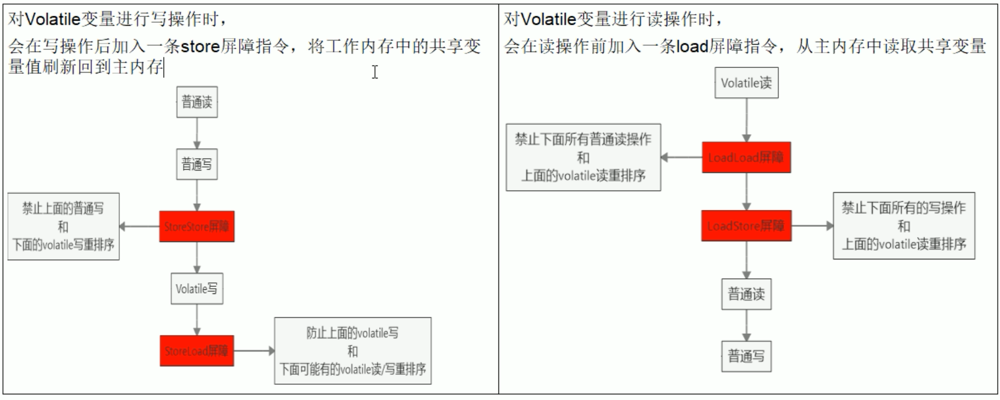
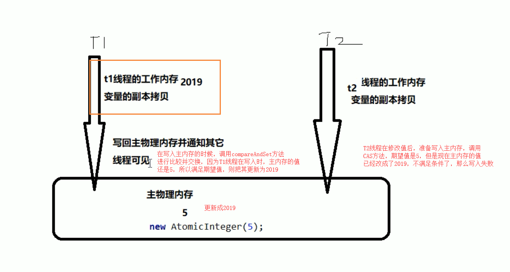
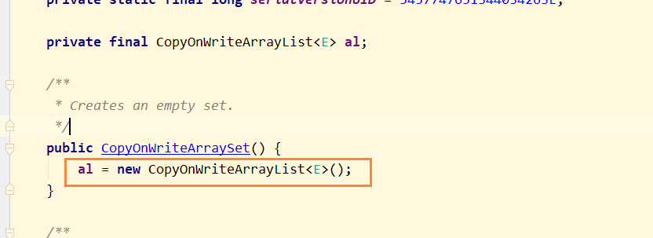
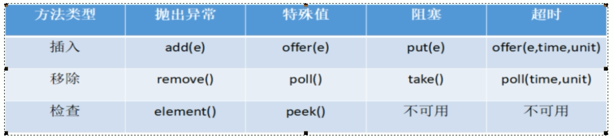
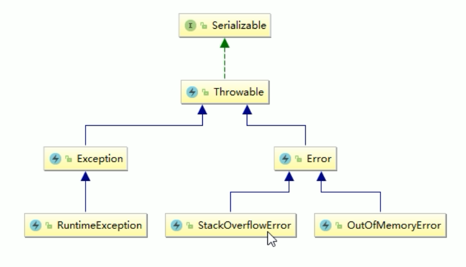
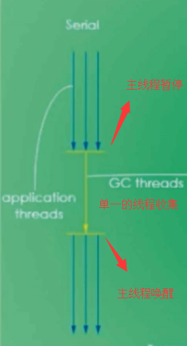
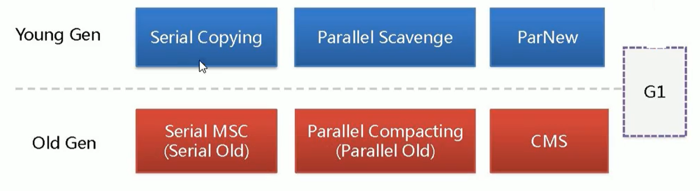
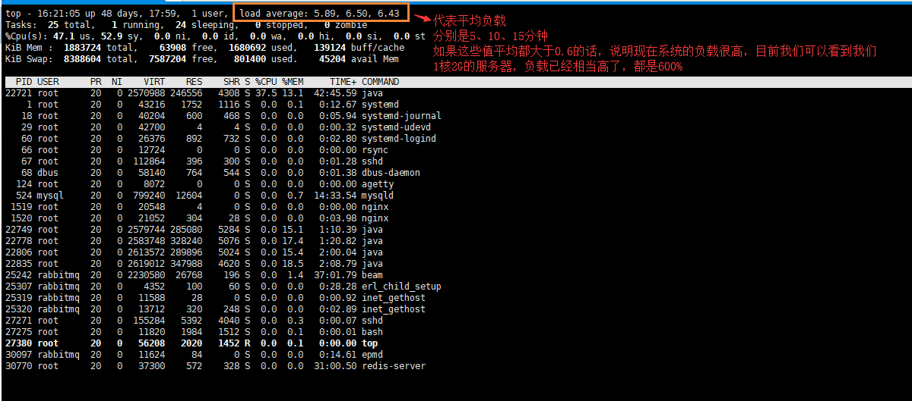
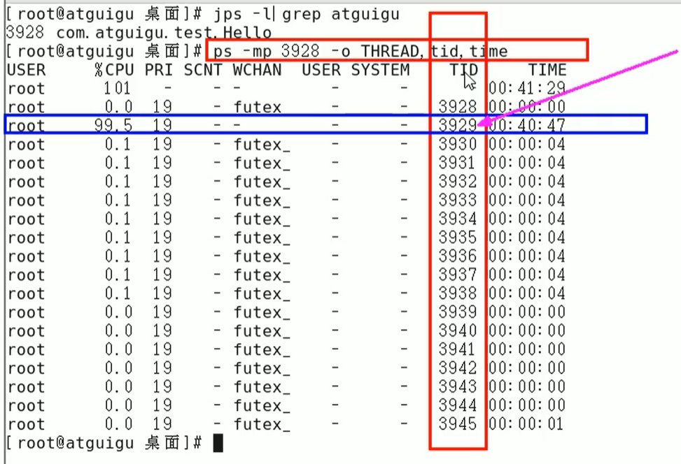
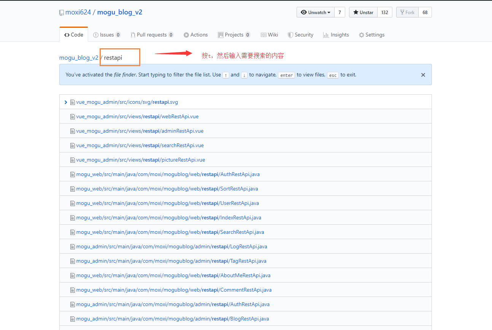

1 JUC
1.1 volatile
介绍
volatile是java虚拟机提供的轻量级同步机制，所谓的轻量级是相对于synchronized同步锁来说。
volatile的作用和特点：
- 保证内存可见性
- 禁止指令重排
- 不保证原子性
synchronized这三者都可以保障
Java Memory Model
要理解以上三大特性，首先要理解Java内存模型（Java Memory Model，JMM），本身是一种抽象的概念，并不真实存在，它描述的是一组规则或规范，通过这组规范定义了程序中各个变量（包括实例字段，静态字段和构成数组对象的元素）的访问方式。
JMM关于同步的规定：
- 线程解锁前，必须把共享变量的值刷新回主内存
- 线程解锁前，必须读取主内存的最新值，到自己的工作内存
- 加锁和解锁是同一把锁
保证可见性
由于JVM运行程序的实体是线程，而每个线程创建时JVM都会为其创建一个工作内存（有些地方称为栈空间），工作内存是每个线程的私有数据区域。
Java内存模型中规定所有变量都存储在主内存，主内存是共享内存区域，所有线程都可以访问，但线程对变量的操作（读取赋值等）必须在工作内存中进行。
一个线程如果想要修改主内存中的变量，首先要将变量从主内存拷贝的自己的工作内存空间，然后对变量进行操作，操作完成后再将变量写回主内存，不能直接操作主内存中的变量，各个线程中的工作内存中存储着主内存中的变量副本拷贝，因此不同的线程间无法访问对方的工作内存线程间的通信（传值）必须通过主内存来完成，其简要访问过程如下图：
- 主内存：就是计算机的内存，也就是经常提到的8G内存，16G内存
- 工作内存：但我们实例化 new student，那么 age = 25 也是存储在主内存中
当同时有三个线程同时访问 student中的age变量时，那么每个线程都会拷贝一份，到各自的工作内存，从而实现了变量的拷贝：

JMM内存模型的可见性，指的是当主内存区域中的值被某个线程写入更改后，其它线程会马上知晓更改后的值，并重新得到更改后的值。
可见性测试代码
import java.util.concurrent.TimeUnit;
/**
* 假设是主物理内存
*/
class MyData {
int number = 0;
public void addTo60() {
this.number = 60;
}
}
/**
* 验证volatile的可见性
* 1. 假设int number = 0， number变量之前没有添加volatile关键字修饰
*/
public class VolatileDemo {
public static void main(String args []) {
// 资源类
MyData myData = new MyData();
// AAA线程 实现了Runnable接口的，lambda表达式
new Thread(() -> {
System.out.println(Thread.currentThread().getName() + "\t come in");
// 线程睡眠3秒，假设在进行运算
try {
TimeUnit.SECONDS.sleep(3);
} catch (InterruptedException e) {
e.printStackTrace();
}
// 修改number的值
myData.addTo60();
// 输出修改后的值
System.out.println(Thread.currentThread().getName() + "\t update number value:" + myData.number);
}, "AAA").start();
while(myData.number == 0) {
// main线程就一直在这里等待循环，直到number的值不等于零
}
// 按道理这个值是不可能打印出来的，因为主线程运行的时候，number的值为0，所以一直在循环
// 如果能输出这句话，说明AAA线程在睡眠3秒后，更新的number的值，重新写入到主内存，并被main线程感知到了
System.out.println(Thread.currentThread().getName() + "\t mission is over");
/**
* 最后输出结果：
* AAA come in
* AAA update number value:60
* 最后线程没有停止，并行没有输出 mission is over 这句话，说明没有用volatile修饰的变量，是没有可见性
*/
}
}当我们修改MyData类中的成员变量，并且添加volatile关键字修饰之后，就可以保证可见性，主线程正常终止。
/**
* 假设是主物理内存
*/
class MyData {
/**
* volatile 修饰的关键字，是为了增加 主线程和线程之间的可见性，只要有一个线程修改了内存中的值，其它线程也能马上感知
*/
volatile int number = 0;
public void addTo60() {
this.number = 60;
}
}不保证原子性
原子性是指不可分割，完整性，也就是说某个线程正在做某个具体业务时，中间不可以被加塞或者被分割，需要具体完成，要么同时成功，要么同时失败。数据库也经常提到事务具备原子性。
但是volatile不能保证原子性！这和synchronized有着显著区别。
原子性测试代码
创建20个线程，然后每个线程分别循环1000次，来调用number++的方法。
import java.util.concurrent.TimeUnit;
/**
* 假设是主物理内存
*/
class MyData {
/**
* volatile 修饰的关键字，是为了增加 主线程和线程之间的可见性，只要有一个线程修改了内存中的值，其它线程也能马上感知
*/
volatile int number = 0;
public void addTo60() {
this.number = 60;
}
/**
* 注意，此时number 前面是加了volatile修饰
*/
public void addPlusPlus() {
number ++;
}
}
/**
* 验证volatile的可见性
* 1、 假设int number = 0， number变量之前没有添加volatile关键字修饰
* 2、添加了volatile，可以解决可见性问题
*
* 验证volatile不保证原子性
* 1、原子性指的是什么意思？
*/
public class VolatileDemo {
public static void main(String args []) {
MyData myData = new MyData();
// 创建10个线程，线程里面进行1000次循环
for (int i = 0; i < 20; i++) {
new Thread(() -> {
// 里面
for (int j = 0; j < 1000; j++) {
myData.addPlusPlus();
}
}, String.valueOf(i)).start();
}
// 需要等待上面20个线程都计算完成后，在用main线程取得最终的结果值
// 这里判断线程数是否大于2，为什么是2？因为默认是有两个线程的，一个main线程，一个gc线程
while(Thread.activeCount() > 2) {
// yield表示不执行
Thread.yield();
}
// 查看最终的值
// 假设volatile保证原子性，那么输出的值应该为： 20 * 1000 = 20000
System.out.println(Thread.currentThread().getName() + "\t finally number value: " + myData.number);
}
}最终结果number输出的值并没有20000，而且是每次运行的结果都不一致的，为什么会出现数值丢失？

自增操作并不是一条指令完成的，使用javap，将如下代码转成字节码文件查看：
public class T1 {
volatile int n = 0;
public void add() {
n++;
}
}public class com.moxi.interview.study.thread.T1 {
volatile int n;
public com.moxi.interview.study.thread.T1();
Code:
0: aload_0
1: invokespecial #1 // Method java/lang/Object."<init>":()V
4: aload_0
5: iconst_0
6: putfield #2 // Field n:I
9: return
public void add();
Code:
0: aload_0
1: dup
2: getfield #2 // Field n:I
5: iconst_1
6: iadd
7: putfield #2 // Field n:I
10: return
}n++这条命令，被拆分成了3个指令：
- 执行
getfield从主内存拿到原始n - 执行
iadd进行加1操作 - 执行
putfileld把累加后的值写回主内存
注意，volatile不保证原子性，那么可能同时有多个线程同时通过getfield命令，拿到主存中的n值，然后各自在自己的工作内存中进行加1操作，但他们并发进行iadd命令的时候，只能一个进行写，所以其它操作会被挂起，假设1线程，先进行了写操作，在写完后，volatile的可见性使得它需要告诉其它两个线程，主内存的值已经被修改了，但是因为太快了，其它两个线程陆续执行iadd命令，进行写入操作，这就造成了其他线程没有接受到主内存n的改变，从而覆盖了原来的值，出现写丢失，这样也就让最终的结果少于20000。
解决方法：
- 杀鸡用牛刀，synchronized对自增方法加锁
- 轻量级的解决方案，AtomicInteger
Appendix：JVM 虚拟机字节码指令表
保证有序性
所谓有序性，指计算机在执行程序时，对指令的处理并不是严格按照代码的顺序来执行，而是会对指令进行重排序，一般有以下三种重排：
源代码 -> 编译器优化的重排 -> 指令并行的重排 -> 内存系统的重排 -> 最终执行指令处理器在进行重排序时，必须要考虑指令之间的数据依赖性，因此单线程环境下，重排序过后也能保证最终执行结果和代码顺序执行的结果一致，但是多线程环境下线程交替执行，由于编译器优化重排的存在，两个线程中使用的变量能否保证一致性是无法确定的，结果无法预测。
example 1
public void mySort() {
int x = 11;
int y = 12;
x = x + 5;
y = x * x;
}按照正常代码逻辑，执行顺序是 1 2 3 4，但是在指令重排机制下，可能出现以下的顺序：
- 2 1 3 4
- 1 3 2 4
example 2
public class ResortSeqDemo {
int a= 0;
boolean flag = false;
public void method01() {
a = 1;
flag = true;
}
public void method02() {
if(flag) {
a = a + 5;
System.out.println("reValue:" + a);
}
}
}我们按照正常的顺序，分别调用method01() 和 method02() 那么，最终输出就是 a = 6。
但是在多线程环境下，方法1和方法2之间不能存在数据依赖的问题，方法1的两行代码被重排，那么线程1调用方法1执行flag = true后，另外一个线程马上调用方法2，会出现：
flag = true;
a = a + 5;
System.out.println("reValue:" + a);
a = 1;有序性代码测试
内存屏障（Memory Barrier）是一个CPU指令，它的作用有两个：
- 保证特定操作的顺序（利用该特性实现volatile的保障有序性）：由于编译器和处理器都能执行指令重排的优化，如果在指令间插入一条Memory Barrier则会告诉编译器和CPU，不管什么指令都不能和这条Memory Barrier指令重排序，也就是说通过插入内存屏障禁止在内存屏障前后的指令执行重排序优化。
- 保证某些变量的内存可见性（利用该特性实现volatile的内存可见性）：内存屏障另外一个作用是刷新出各种CPU的缓存数，因此任何CPU上的线程都能读取到这些数据的最新版本。

应用：多线程下的单例模式
单线程下的单例模式：
public class SingletonDemo {
private static SingletonDemo instance = null;
private SingletonDemo () {
System.out.println(Thread.currentThread().getName() + "\t 我是构造方法SingletonDemo");
}
public static SingletonDemo getInstance() {
if(instance == null) {
instance = new SingletonDemo();
}
return instance;
}
public static void main(String[] args) {
// 这里的 == 是比较内存地址
System.out.println(SingletonDemo.getInstance() == SingletonDemo.getInstance());
System.out.println(SingletonDemo.getInstance() == SingletonDemo.getInstance());
System.out.println(SingletonDemo.getInstance() == SingletonDemo.getInstance());
System.out.println(SingletonDemo.getInstance() == SingletonDemo.getInstance());
}
}多线程下测试：
public static void main(String[] args) {
for (int i = 0; i < 10; i++) {
new Thread(() -> {
SingletonDemo.getInstance();
}, String.valueOf(i)).start();
}
}结果会有多个构造方法执行打印，说明创造出了多个对象。
解决方法1：synchronized
public synchronized static SingletonDemo getInstance() {
if(instance == null) {
instance = new SingletonDemo();
}
return instance;
}可以解决问题，但是synchronized属于重量级的同步机制，同一时刻它只允许一个线程访问获取实例的方法，保证数据一致性的同时降低了并发性，因此采用的比较少。
解决方法2：DCL
DCL（Double Check Lock）双端检锁机制可以让同一时刻多个线程访问获取实例的方法又保证单例。
public static SingletonDemo getInstance() {
if(instance == null) {
// 同步代码段的时候，进行检测
synchronized (SingletonDemo.class) {
if(instance == null) {
instance = new SingletonDemo();
}
}
}
return instance;
}看起来很对了，但是，还有一个隐忧，即指令重排的问题。
instance = new SingletonDemo();这段代码看上去只是一句话，但是涉及到3个指令：
- memory = allocate(); // 1、分配对象内存空间
- instance(memory); // 2、初始化对象
- instance = memory; // 3、设置instance指向刚刚分配的内存地址，此时instance != null
步骤2和步骤3之间不存在数据依赖关系，而且无论重排前还是重排后，程序的执行结果在单线程中并没有改变，因此这种重排优化是允许的，如果按照1 3。2的步骤执行，那么就可能出现访问到未初始化对象的问题：
- 线程1进入方法并抢占到锁，按1 3 2执行
instance = new SingletonDemo();并执行完指令3，此时instance已不再是空指针； - 线程2进入方法进行第一次检查发现instance不为null，直接返回instance，但此时初始化却没有完成。
所以还需要引入volatile来禁止指令重排：
private static volatile SingletonDemo instance = null;1.2 CAS
介绍
CAS的全称是Compare-And-Swap，它是CPU并发原语。
CAS并发原语体现在Java语言中就是sun.misc.Unsafe类的各个方法，调用Unsafe类中的CAS方法，JVM会帮我们实现出CAS汇编指令，这是一种完全依赖于硬件的功能，通过它实现了原子操作。
再次强调，由于CAS是一种系统原语，原语属于操作系统用于范畴，是由若干条指令组成、用于完成某个功能的一个过程，并且原语的执行必须是连续的，在执行过程中不允许被中断，也就是说CAS是一条CPU的原子指令，不会造成所谓的数据不一致的问题，因此CAS是线程安全的。
代码使用
public class CASDemo {
public static void main(String[] args) {
// 创建一个原子类
AtomicInteger atomicInteger = new AtomicInteger(5);
/**
* 一个是期望值，一个是更新值，但期望值和原来的值相同时，才能够更改
* 假设三秒前，我拿的是5，也就是expect为5，然后我需要更新成 2019
*/
System.out.println(atomicInteger.compareAndSet(5, 2019) + "\t current data: " + atomicInteger.get());
System.out.println(atomicInteger.compareAndSet(5, 1024) + "\t current data: " + atomicInteger.get());
}
}执行第一个的时候，期望值和原本值是满足的，因此修改成功，但是第二次后，主内存的值已经修改成了2019，不满足期望值，因此返回了false，本次写入失败。

底层原理
观察atomicInteger.getAndIncrement()方法的源码可以看到，底层又调用了一个unsafe类的getAndAddInt方法
- Unsafe类

Unsafe是CAS的核心类，由于Java方法无法直接访问底层系统，需要通过本地（Native）方法来访问，Unsafe相当于一个后门，基于该类可以直接操作特定的内存数据。Unsafe类存在sun.misc包中，所有方法都是native修饰的，其内部方法操作可以像C的指针一样直接操作内存，也就是说Unsafe类中的方法都可以直接调用操作系统底层资源执行相应的任务
- 变量valueOffset：表示该变量值在内存中的偏移地址，因为Unsafe就是根据内存偏移地址获取数据的

- 变量value用volatile修饰：保证了多线程之间的内存可见性

- val1：AtomicInteger对象本身
- var2：该对象值得引用地址
- var4：需要变动的数量
- var5：用var1和var2找到的内存中的真实值
- 用该对象当前的值与var5比较
- 如果相同，更新var5 + var4 并返回true
- 如果不同，继续取值然后再比较，直到更新完成
这里没有用synchronized，而用CAS，这样能够实现一致性，也提高了并发性，是因为每个线程进来后，进入do-while循环，然后不断的获取内存中的值，判断是否为最新，然后在进行更新操作。
假设线程A和线程B同时执行getAndInt操作（分别跑在不同的CPU上）：
- AtomicInteger里面的value原始值为3，即主内存中AtomicInteger的value为3，根据JMM模型，线程A和线程B各自持有一份值为3的副本，分别存储在各自的工作内存
- 线程A通过getIntVolatile(var1 , var2) 拿到value值3，这时线程A被挂起（该线程失去CPU执行权）
- 线程B也通过getIntVolatile(var1, var2)方法获取到value值也是3，此时刚好线程B没有被挂起，并执行了compareAndSwapInt方法，比较内存的值也是3，成功修改内存值为4，线程B打完收工，一切OK
- 然后线程A恢复，执行CAS方法，比较发现自己手里的数字3和主内存中的数字4不一致，说明该值已经被其它线程抢先一步修改过了，那么A线程本次修改失败，只能够重新读取后在来一遍了，也就是继续执行do-while
- 线程A重新获取value值，因为变量value被volatile修饰，所以其它线程对它的修改，线程A总能够看到，线程A继续执行compareAndSwapInt进行比较替换，直到成功
总的来说，Unsafe类 + CAS思想的就是自旋！
缺点
CAS不加锁的情况下能够保证一致性，但是需要多次比较
- 循环时间长，开销大：因为执行的是do while，如果比较不成功一直在循环，最差的情况，就是某个线程一直取到的值和预期值都不一样，这样就会无限循环
- 只能保证一个共享变量的原子操作：当对一个共享变量执行操作时，我们可以通过循环CAS的方式来保证原子操作，但是对于多个共享变量操作时，循环CAS就无法保证操作的原子性，这个时候只能用锁来保证原子性
- 引出来ABA问题
ABA问题
ABA：狸猫换太子，太子换狸猫。
- 假设现在有两个线程T1、T2，T1执行某个操作的时间为10秒，T2执行某个时间的操作是2秒
- 最开始T1、T2分别从主内存中获取A值，但是因为T2的执行速度更快，他先把A值改成B改成C然后再修改回A，执行完毕
- T1线程在10秒后判断内存中的值为A，发现和自己预期的值一样，它就认为没有人更改了主内存中的值，就快乐地修改成B，但是实际上可能中间经历了 ABCDEFA这个变换
所以ABA问题就是，在进行获取主内存值的时候，该内存值在我们写入主内存的时候，已经被修改了N次，只是最终又改成原来的值了，但是CAS只管开头和结尾，也就是头和尾是一样那就比较成功进行修改，中间可能已经被其他线程获取并修改过了。
基于原子引用的ABA
原子引用和原子包装类是差不多的概念，即将一个Java类用原子引用类包装起来，那么这个类就具备了原子性，并且可以调用CAS方法。
class User {
String userName;
int age;
public User(String userName, int age) {
this.userName = userName;
this.age = age;
}
public String getUserName() {
return userName;
}
public void setUserName(String userName) {
this.userName = userName;
}
public int getAge() {
return age;
}
public void setAge(int age) {
this.age = age;
}
@Override
public String toString() {
return "User{" +
"userName='" + userName + '\'' +
", age=" + age +
'}';
}
}
public class AtomicReferenceDemo {
public static void main(String[] args) {
User z3 = new User("z3", 22);
User l4 = new User("l4", 25);
// 创建原子引用包装类
AtomicReference<User> atomicReference = new AtomicReference<>();
// 现在主物理内存的共享变量，为z3
atomicReference.set(z3);
// 比较并交换，如果现在主物理内存的值为z3，那么交换成l4
System.out.println(atomicReference.compareAndSet(z3, l4) + "\t " + atomicReference.get().toString());
// 比较并交换，现在主物理内存的值是l4了，但是预期为z3，因此交换失败
System.out.println(atomicReference.compareAndSet(z3, l4) + "\t " + atomicReference.get().toString());
}
}基于原子引用也会引发ABA问题，比如首先创建了两个线程，然后T1线程，执行一次ABA的操作，T2线程在一秒后修改主内存的值。
public class ABADemo {
/**
* 普通的原子引用包装类
*/
static AtomicReference<Integer> atomicReference = new AtomicReference<>(100);
public static void main(String[] args) {
new Thread(() -> {
// 把100 改成 101 然后在改成100，也就是ABA
atomicReference.compareAndSet(100, 101);
atomicReference.compareAndSet(101, 100);
}, "t1").start();
new Thread(() -> {
try {
// 睡眠一秒，保证t1线程，完成了ABA操作
TimeUnit.SECONDS.sleep(1);
} catch (InterruptedException e) {
e.printStackTrace();
}
// 把100 改成 101 然后在改成100，也就是ABA
System.out.println(atomicReference.compareAndSet(100, 2019) + "\t" + atomicReference.get());
}, "t2").start();
}
}显然t2线程可以修改成功。
解决ABA问题：AtomicStampedReference
新增一种机制，修改值的同时也修改版本号，或者类似于时间戳的概念，即AtomicStampedReference，带版本的原子引用，也就是每次更新的时候，需要比较期望值和当前值，以及期望版本号和当前版本号。
public class ABADemo {
/**
* 普通的原子引用包装类
*/
static AtomicReference<Integer> atomicReference = new AtomicReference<>(100);
// 传递两个值，一个是初始值，一个是初始版本号
static AtomicStampedReference<Integer> atomicStampedReference = new AtomicStampedReference<>(100, 1);
public static void main(String[] args) {
System.out.println("============以下是ABA问题的产生==========");
new Thread(() -> {
// 把100 改成 101 然后在改成100，也就是ABA
atomicReference.compareAndSet(100, 101);
atomicReference.compareAndSet(101, 100);
}, "t1").start();
new Thread(() -> {
try {
// 睡眠一秒，保证t1线程，完成了ABA操作
TimeUnit.SECONDS.sleep(1);
} catch (InterruptedException e) {
e.printStackTrace();
}
// 把100 改成 101 然后在改成100，也就是ABA
System.out.println(atomicReference.compareAndSet(100, 2019) + "\t" + atomicReference.get());
}, "t2").start();
System.out.println("============以下是ABA问题的解决==========");
new Thread(() -> {
// 获取版本号
int stamp = atomicStampedReference.getStamp();
System.out.println(Thread.currentThread().getName() + "\t 第一次版本号" + stamp);
// 暂停t3一秒钟
try {
TimeUnit.SECONDS.sleep(1);
} catch (InterruptedException e) {
e.printStackTrace();
}
// 传入4个值，期望值，更新值，期望版本号，更新版本号
atomicStampedReference.compareAndSet(100, 101, atomicStampedReference.getStamp(), atomicStampedReference.getStamp()+1);
System.out.println(Thread.currentThread().getName() + "\t 第二次版本号" + atomicStampedReference.getStamp());
atomicStampedReference.compareAndSet(101, 100, atomicStampedReference.getStamp(), atomicStampedReference.getStamp()+1);
System.out.println(Thread.currentThread().getName() + "\t 第三次版本号" + atomicStampedReference.getStamp());
}, "t3").start();
new Thread(() -> {
// 获取版本号
int stamp = atomicStampedReference.getStamp();
System.out.println(Thread.currentThread().getName() + "\t 第一次版本号" + stamp);
// 暂停t4 3秒钟，保证t3线程也进行一次ABA问题
try {
TimeUnit.SECONDS.sleep(3);
} catch (InterruptedException e) {
e.printStackTrace();
}
boolean result = atomicStampedReference.compareAndSet(100, 2019, stamp, stamp+1);
System.out.println(Thread.currentThread().getName() + "\t 修改成功否：" + result + "\t 当前最新实际版本号：" + atomicStampedReference.getStamp());
System.out.println(Thread.currentThread().getName() + "\t 当前实际最新值" + atomicStampedReference.getReference());
}, "t4").start();
}
}我们能够发现，线程t3在进行ABA操作后，版本号变更成了3，而线程t4在进行操作的时候，就出现操作失败了，因为版本号和当初拿到的不一样。
1.3 集合
复习
当我们执行new ArrayList<Integer>();的时候，底层进行了什么操作？
- 底层创建了一个空的数组，伴随着初始值为10
- 当执行add方法后，如果超过了10，那么会进行扩容，扩容后大小为原来的1.5倍，使用的方法是
Arrays.copyOf(elementData, netCapacity)
单线程环境下，ArrayList的使用不会有问题。
多线程下的ArrayList
为什么ArrayList是线程不安全的？
- 写操作的方法为了保证并发性，没有添加synchronized修饰，所以并发写的时候就会出现问题
当我们同时启动30个线程去操作List，会报异常java.util.ConcurrentModificationException
public class ArrayListNotSafeDemo {
public static void main(String[] args) {
List<String> list = new ArrayList<>();
for (int i = 0; i < 30; i++) {
new Thread(() -> {
list.add(UUID.randomUUID().toString().substring(0, 8));
System.out.println(list);
}, String.valueOf(i)).start();
}
}
}解决方案：
- Vector
Vector是古老的List集合实现类，并且是线程安全，因为它的方法都加上了synchronized，这样每次只能一个线程进行操作，不会出现线程不安全的问题，但是因为加锁也导致并发性下降。
- Collections.synchronizedXXX()
Collections集合工具类提供了一系列synchronized开头的方法，来包装原有的线程不安全的集合实现类，即在ArrayList的方法外面包装一层synchronized，从而保证线程安全：
List<String> list = Collections.synchronizedList(new ArrayList<>());- JUC包下的CopyOnWriteArrayList
CopyOnWriteArrayList是JUC提供的线程安全且比synchronized并发性更好的ArrayList容器，主要思想是读写分离、写时复制。
CopyOnWrite容器即写时复制的容器，往一个容器中添加元素的时候，不直接往当前容器Object[]添加，而是先将Object[]进行copy，复制出一个新的容器object[] newElements，然后向新的容器Object[] newElements里添加元素，添加完成后，再用setArray(newElements)在将原容器的引用指向新的容器。
这样做的好处是可以对copyOnWrite容器进行并发读，还不需要加锁，因为当前容器没有添加任何元素。所以CopyOnWrite容器也是一种读写分离的思想，读和写事实上使用的是不同的容器。
查看底层add方法源码：
public boolean add(E e) {
// 首先需要加锁
final ReentrantLock lock = this.lock;
lock.lock();
try {
// 获取原集合的长度
Object[] elements = getArray();
int len = elements.length;
// 在末尾扩容一个单位创建新集合，并复制原集合元素
Object[] newElements = Arrays.copyOf(elements, len + 1);
// 添加新元素
newElements[len] = e;
// 让指向原集合的引用改为指向新集合
setArray(newElements);
return true;
} finally {
// 解锁
lock.unlock();
}
}CopyOnWrite可以应用于读多写少的场景。
多线程下的HashSet
同理，可以使用CopyOnWriteArraySet，该集合底层还是使用CopyOnWriteArrayList进行实例化：

复习一下HashSet的底层结构：
- 就是HashMap
- 但是为什么我调用HashSet.add()的方法，只需要传递一个元素，而不需要传递key-value键值对？
- HashSet的add方法调用
map.put(e, PRESENT)==null;，其中PRESENT是一个Object类型的常量，即所有的key的value都在内部被设置为PRESENT
多线程下的HashMap
同理线程不安全，解决办法对应ArrayList：
- 使用Hashtable
- 使用Collections.synchronizedMap(new HashMap<>());
- 使用JUC的ConcurrentHashMap
1.4 各种锁
读写锁
独占锁：指该锁一次只能被一个线程所持有。ReentrantLock和Synchronized都是独占锁。
共享锁：指该锁可以被多个线程锁持有
ReentrantReadWriteLock中，其写锁是独占，读锁是共享写的时候只能一个人写，但是读的时候，可以多个人同时读。
原来我们使用ReentrantLock创建锁的时候，是独占锁，也就是说一次只能一个线程访问，但是大部分情况下都是读写分离场景，写的时候想同时进行读，因此原来独占锁的并发性就没这么好了，因为读锁并不会造成数据不一致的问题，因此应该允许多个人共享读。
如果不加锁，用多个线程读取缓存，代码测试：
import java.util.HashMap;
import java.util.Map;
import java.util.concurrent.TimeUnit;
import java.util.concurrent.locks.Lock;
/**
* 资源类
*/
class MyCache {
private volatile Map<String, Object> map = new HashMap<>();
// private Lock lock = null;
/**
* 定义写操作
* 满足：原子 + 独占
* @param key
* @param value
*/
public void put(String key, Object value) {
System.out.println(Thread.currentThread().getName() + "\t 正在写入：" + key);
try {
// 模拟网络拥堵，延迟0.3秒
TimeUnit.MILLISECONDS.sleep(300);
} catch (InterruptedException e) {
e.printStackTrace();
}
map.put(key, value);
System.out.println(Thread.currentThread().getName() + "\t 写入完成");
}
public void get(String key) {
System.out.println(Thread.currentThread().getName() + "\t 正在读取:");
try {
// 模拟网络拥堵，延迟0.3秒
TimeUnit.MILLISECONDS.sleep(300);
} catch (InterruptedException e) {
e.printStackTrace();
}
Object value = map.get(key);
System.out.println(Thread.currentThread().getName() + "\t 读取完成：" + value);
}
}
public class ReadWriteLockDemo {
public static void main(String[] args) {
MyCache myCache = new MyCache();
// 线程操作资源类，5个线程写
for (int i = 0; i < 5; i++) {
// lambda表达式内部必须是final
final int tempInt = i;
new Thread(() -> {
myCache.put(tempInt + "", tempInt + "");
}, String.valueOf(i)).start();
}
// 线程操作资源类， 5个线程读
for (int i = 0; i < 5; i++) {
// lambda表达式内部必须是final
final int tempInt = i;
new Thread(() -> {
myCache.get(tempInt + "");
}, String.valueOf(i)).start();
}
}
}0 正在写入：0
4 正在写入：4
3 正在写入：3
1 正在写入：1
2 正在写入：2
0 正在读取:
1 正在读取:
2 正在读取:
3 正在读取:
4 正在读取:
2 写入完成
4 写入完成
4 读取完成：null
0 写入完成
3 读取完成：null
0 读取完成：null
1 写入完成
3 写入完成
1 读取完成：null
2 读取完成：null可以看到，在写入的时候，写操作被其它线程打断了，这就造成写到一半其它线程又开始写，导致数据不一致。原因是没有加锁，写操作的原子性没有得到保证，被频繁打断，这个时候就需要用到读写锁来解决了：
import java.util.HashMap;
import java.util.Map;
import java.util.concurrent.TimeUnit;
import java.util.concurrent.locks.Lock;
import java.util.concurrent.locks.ReentrantLock;
import java.util.concurrent.locks.ReentrantReadWriteLock;
/**
* 资源类
*/
class MyCache {
/**
* 缓存中的东西，必须保持可见性，因此使用volatile修饰
*/
private volatile Map<String, Object> map = new HashMap<>();
/**
* 创建一个读写锁
* 它是一个读写融为一体的锁，在使用的时候，需要转换
*/
private ReentrantReadWriteLock rwLock = new ReentrantReadWriteLock();
/**
* 定义写操作
* 满足：原子 + 独占
* @param key
* @param value
*/
public void put(String key, Object value) {
// 创建一个写锁
rwLock.writeLock().lock();
try {
System.out.println(Thread.currentThread().getName() + "\t 正在写入：" + key);
try {
// 模拟网络拥堵，延迟0.3秒
TimeUnit.MILLISECONDS.sleep(300);
} catch (InterruptedException e) {
e.printStackTrace();
}
map.put(key, value);
System.out.println(Thread.currentThread().getName() + "\t 写入完成");
} catch (Exception e) {
e.printStackTrace();
} finally {
// 写锁 释放
rwLock.writeLock().unlock();
}
}
/**
* 获取
* @param key
*/
public void get(String key) {
// 读锁
rwLock.readLock().lock();
try {
System.out.println(Thread.currentThread().getName() + "\t 正在读取:");
try {
// 模拟网络拥堵，延迟0.3秒
TimeUnit.MILLISECONDS.sleep(300);
} catch (InterruptedException e) {
e.printStackTrace();
}
Object value = map.get(key);
System.out.println(Thread.currentThread().getName() + "\t 读取完成：" + value);
} catch (Exception e) {
e.printStackTrace();
} finally {
// 读锁释放
rwLock.readLock().unlock();
}
}
/**
* 清空缓存
*/
public void clean() {
map.clear();
}
}
public class ReadWriteLockDemo {
public static void main(String[] args) {
MyCache myCache = new MyCache();
// 线程操作资源类，5个线程写
for (int i = 1; i <= 5; i++) {
// lambda表达式内部必须是final
final int tempInt = i;
new Thread(() -> {
myCache.put(tempInt + "", tempInt + "");
}, String.valueOf(i)).start();
}
// 线程操作资源类， 5个线程读
for (int i = 1; i <= 5; i++) {
// lambda表达式内部必须是final
final int tempInt = i;
new Thread(() -> {
myCache.get(tempInt + "");
}, String.valueOf(i)).start();
}
}
}1 正在写入：1
1 写入完成
2 正在写入：2
2 写入完成
3 正在写入：3
3 写入完成
4 正在写入：4
4 写入完成
5 正在写入：5
5 写入完成
2 正在读取:
3 正在读取:
1 正在读取:
4 正在读取:
5 正在读取:
2 读取完成：2
1 读取完成：1
4 读取完成：4
3 读取完成：3
5 读取完成：5公平锁 & 非公平锁
公平锁：指多个线程按照申请锁的顺序来获取锁，类似于排队买饭，先来后到，先来先服务，就是公平的，也就是按队列来获取锁，每个线程在获取锁时会先查看此锁维护的等待队列，如果为空，或者当前线程是等待队列中的第一个，就占用锁，否者就会加入到等待队列中，以后按照FIFO的规则排队获取锁。
非公平锁：指多个线程获取锁的顺序，并不是严格按照申请锁的顺序，有可能后申请的线程比先申请的线程优先获取锁，在高并发环境下，有可能造成优先级翻转，或者线程饥饿（也就是某个线程一直得不到锁），非公平锁下的线程上来就直接尝试占有锁，如果尝试失败，就再采用类似公平锁那种方式加入到队列当中。
synchronized就是一种非公平锁，JUC中ReentrantLock创建时可以指定构造函数的参数boolean类型来得到公平锁或者非公平锁，默认是false，即非公平锁：
/**
* 创建一个可重入锁，true 表示公平锁，false 表示非公平锁。默认非公平锁
*/
Lock lock = new ReentrantLock(true);可重入锁
可重入锁就是递归锁，指的是同一线程外层函数获得锁之后，内层递归函数仍然能获取到该锁，即在同一线程在外层方法获取锁之后，在进入内层方法时会自动获取锁
ReentrantLock / synchronized 都是可重入锁。
synchronized可重入验证：
/**
* 资源类
*/
class Phone {
/**
* 发送短信
* @throws Exception
*/
public synchronized void sendSMS() throws Exception{
System.out.println(Thread.currentThread().getName() + "\t invoked sendSMS()");
// 在同步方法中，调用另外一个同步方法
sendEmail();
}
/**
* 发邮件
* @throws Exception
*/
public synchronized void sendEmail() throws Exception{
System.out.println(Thread.currentThread().getId() + "\t invoked sendEmail()");
}
}
public class ReenterLockDemo {
public static void main(String[] args) {
Phone phone = new Phone();
// 两个线程操作资源列
new Thread(() -> {
try {
phone.sendSMS();
} catch (Exception e) {
e.printStackTrace();
}
}, "t1").start();
new Thread(() -> {
try {
phone.sendSMS();
} catch (Exception e) {
e.printStackTrace();
}
}, "t2").start();
}
}ReentrantLock可重入验证：
import java.util.concurrent.TimeUnit;
import java.util.concurrent.locks.Lock;
import java.util.concurrent.locks.ReentrantLock;
/**
* 资源类
*/
class Phone implements Runnable{
Lock lock = new ReentrantLock();
/**
* set进去的时候，就加锁，调用set方法的时候，能否访问另外一个加锁的set方法
*/
public void getLock() {
lock.lock();
try {
System.out.println(Thread.currentThread().getName() + "\t get Lock");
setLock();
} finally {
lock.unlock();
}
}
public void setLock() {
lock.lock();
try {
System.out.println(Thread.currentThread().getName() + "\t set Lock");
} finally {
lock.unlock();
}
}
@Override
public void run() {
getLock();
}
}
public class ReenterLockDemo {
public static void main(String[] args) {
Phone phone = new Phone();
/**
* 因为Phone实现了Runnable接口
*/
Thread t3 = new Thread(phone, "t3");
Thread t4 = new Thread(phone, "t4");
t3.start();
t4.start();
}
}注意，因此ReentrantLock的加锁解锁得在代码层面手动控制，因此一定要一一对应：
- 如果lock了2次，只unlock1次，线程就会一直持有锁，出不来同步代码块，不会停止运行
- 如果lock了1次，unlock了2次，程序会直接报异常
java.lang.IllegalMonitorStateException
自旋锁
自旋锁，spinlock，是指尝试获取锁的线程不会立即阻塞，而是采用循环的方式去尝试获取锁，这样的好处是减少线程上下文切换的消耗，缺点是循环尝试获取锁会一直占用消耗CPU资源。
之前提到的Compare And Swap，底层使用的就是自旋。
手写自旋锁：
/**
* 手写一个自旋锁
*
* 循环比较获取直到成功为止，没有类似于wait的阻塞
*
* 通过CAS操作完成自旋锁，A线程先进来调用myLock方法自己持有锁5秒，B随后进来发现当前有线程持有锁，不是null，所以只能通过自旋等待，直到A释放锁后B随后抢到
* @author: 陌溪
* @create: 2020-03-15-15:46
*/
public class SpinLockDemo {
// 现在的泛型装的是Thread，原子引用线程
AtomicReference<Thread> atomicReference = new AtomicReference<>();
public void myLock() {
// 获取当前进来的线程
Thread thread = Thread.currentThread();
System.out.println(Thread.currentThread().getName() + "\t come in ");
// 开始自旋，期望值是null，更新值是当前线程，如果是null，则更新为当前线程，否者自旋
while(!atomicReference.compareAndSet(null, thread)) {
}
}
/**
* 解锁
*/
public void myUnLock() {
// 获取当前进来的线程
Thread thread = Thread.currentThread();
// 自己用完了后，把atomicReference变成null
atomicReference.compareAndSet(thread, null);
System.out.println(Thread.currentThread().getName() + "\t invoked myUnlock()");
}
public static void main(String[] args) {
SpinLockDemo spinLockDemo = new SpinLockDemo();
// 启动t1线程，开始操作
new Thread(() -> {
// 开始占有锁
spinLockDemo.myLock();
try {
TimeUnit.SECONDS.sleep(5);
} catch (InterruptedException e) {
e.printStackTrace();
}
// 开始释放锁
spinLockDemo.myUnLock();
}, "t1").start();
// 让main线程暂停1秒，使得t1线程，先执行
try {
TimeUnit.SECONDS.sleep(5);
} catch (InterruptedException e) {
e.printStackTrace();
}
// 1秒后，启动t2线程，开始占用这个锁
new Thread(() -> {
// 开始占有锁
spinLockDemo.myLock();
// 开始释放锁
spinLockDemo.myUnLock();
}, "t2").start();
}
}1.5 工具类
CountDownLatch
现在有这样一个场景，假设一个自习室里有7个人，其中有一个是班长，班长的主要职责就是在其它6个同学走了后，关灯，锁教室门，然后走人，因此班长是需要最后一个走的，那么有什么方法能够控制班长这个线程最后一个执行，而其它线程是随机执行呢？CountDownLatch可以解决这个问题。
CountDownLatch主要有两个方法：countdown()和await()。
- 当一个或多个线程调用await方法时，调用线程就会被阻塞。其它线程调用countdown方法会将计数器减1（调用countdown方法的线程不会被阻塞），当计数器的值变成零时，因调用await方法被阻塞的线程会被唤醒，继续执行。
public class CountDownLatchDemo {
public static void main(String[] args) throws InterruptedException {
// 计数器
CountDownLatch countDownLatch = new CountDownLatch(6);
for (int i = 0; i <= 6; i++) {
new Thread(() -> {
System.out.println(Thread.currentThread().getName() + "\t 上完自习，离开教室");
countDownLatch.countDown();
}, String.valueOf(i)).start();
}
countDownLatch.await();
System.out.println(Thread.currentThread().getName() + "\t 班长最后关门");
}
}CyclicBarrier
和CountDownLatch相反，CyclicBarrier是做加法。需要集齐七颗龙珠，才能召唤神龙，开始是0，加到某个值的时候就执行。
CyclicBarrier的字面意思就是可循环（cyclic）使用的屏障（Barrier）。它要求做的事情是，让一组线程到达一个屏障（也可以叫同步点）时，调用CyclicBarrier的await方法，被阻塞，计数器+1，直到最后一个线程到达屏障时，屏障才会开门，所有被屏障拦截的线程才会继续干活。
public class CyclicBarrierDemo {
public static void main(String[] args) {
/**
* 定义一个循环屏障，参数1：需要累加的值，参数2 需要执行的方法
*/
CyclicBarrier cyclicBarrier = new CyclicBarrier(7, () -> {
System.out.println("召唤神龙");
});
for (int i = 0; i < 7; i++) {
final Integer tempInt = i;
new Thread(() -> {
System.out.println(Thread.currentThread().getName() + "\t 收集到 第" + tempInt + "颗龙珠");
try {
// 先到的被阻塞，等全部线程完成后，才能执行方法
cyclicBarrier.await();
} catch (InterruptedException e) {
e.printStackTrace();
} catch (BrokenBarrierException e) {
e.printStackTrace();
}
}, String.valueOf(i)).start();
}
}
}Semaphore
Semaphore，信号量，主要用于两个目的
- 用于共享资源的互斥使用
- 用于并发线程数的控制
模拟一个抢车位的场景，假设一共有6个车，3个停车位：
public class SemaphoreDemo {
public static void main(String[] args) {
/**
* 初始化一个信号量为3，默认是false 非公平锁， 模拟3个停车位
*/
Semaphore semaphore = new Semaphore(3, false);
// 模拟6部车
for (int i = 0; i < 6; i++) {
new Thread(() -> {
try {
// 代表一辆车，已经占用了该车位
semaphore.acquire(); // 抢占
System.out.println(Thread.currentThread().getName() + "\t 抢到车位");
// 每个车停3秒
try {
TimeUnit.SECONDS.sleep(3);
} catch (InterruptedException e) {
e.printStackTrace();
}
System.out.println(Thread.currentThread().getName() + "\t 离开车位");
} catch (InterruptedException e) {
e.printStackTrace();
} finally {
// 释放停车位
semaphore.release();
}
}, String.valueOf(i)).start();
}
}
}1.6 BlockingQueue
介绍
队列，Queue，可以想成是一个数组，从一头进入，另一头出去，比如排队买饭。
阻塞队列，BlockingQueue，首先它是一个队列，而一个阻塞队列在数据结构中所起的作用大致如下图所示：
线程1往阻塞队列中添加元素，而线程2从阻塞队列中移除元素：
- 当阻塞队列是空时，从队列中获取元素的操作将会被阻塞
- 当蛋糕店的柜子空的时候，无法从柜子里面获取蛋糕
- 当阻塞队列是满时，从队列中添加元素的操作将会被阻塞
- 当蛋糕店的柜子满的时候，无法继续向柜子里面添加蛋糕了
也就是说 试图从空的阻塞队列中获取元素的线程将会被阻塞，直到其它线程往空的队列插入新的元素；同理，试图往已经满的阻塞队列中添加新元素的线程将会被阻塞，直到其它线程往满的队列中移除一个或多个元素，或者完全清空队列后，使队列重新变得空闲起来，才能继续新增。
为什么要阻塞？好比去海底捞吃饭，大厅满了，后续再来的顾客不可能被经理直接赶走，而是被安排进等候区等待。线程的阻塞，即在某些清空下会挂起线程，一旦条件满足，被挂起的线程又会自动唤醒。
为什么要BlockingQueue？因为这个数据结构使得程序员自身不用再关心什么时候需要阻塞线程，什么时候需要唤醒线程，直接由BlockingQueue包办了。
框架结构
BlockingQueue阻塞队列是一个接口，底下有七个实现类：
- ArrayBlockingQueue：由数组结构组成的有界阻塞队列
- LinkedBlockingQueue：由链表结构组成的有界的阻塞队列，有界，但是默认大小Integer.MAX_VALUE，界限非常大，相当于无界
- PriorityBlockQueue：支持优先级排序的无界阻塞队列
- DelayQueue：使用优先级队列实现的延迟无界阻塞队列
- SynchronousQueue：不存储元素的阻塞队列，也即大小是单个元素的队列，每生产一个，就得消费一个
- LinkedTransferQueue：由链表结构组成的无界阻塞队列
- LinkedBlockingDeque：由链表结构组成的双向阻塞队列
这里需要掌握的主要是：ArrayBlockingQueue、LinkedBlockingQueue、SynchronousQueue
核心方法

- 抛出异常：当阻塞队列满时再往队列中add插入元素会抛出
IllegalStateException：Queue full；当阻塞队列空时再往队列中remove移除元素，会抛出NoSuchElementException。 - 特殊值：插入方法成功true，失败false；移除方法成功返回出队列元素，没有元素就返回null。
- 阻塞：当阻塞队列满时，生产者继续往队列里put元素，队列会一直阻塞生产线程直到put数据or响应中断退出；当阻塞队列空时，消费者线程试图从队列里take元素，队列会一直阻塞消费者线程直到队列可用。
- 超时退出：当阻塞队列满时，向队列添加元素会阻塞生产者线程一定时间，超过限时后生产者线程会退出；当阻塞队列空时，向队列移除元素会阻塞消费者线程一定时间，超过限时后生产者线程会退出。
生产者-消费者
一个初始值为0的变量，两个线程对其交替操作，一个加1，一个减1，来5轮
传统实现：
/**
* 资源类
*/
class ShareData {
private int number = 0;
private Lock lock = new ReentrantLock();
private Condition condition = lock.newCondition();
public void increment() throws Exception{
// 同步代码块，加锁
lock.lock();
try {
// 判断
while(number != 0) {
// 等待不能生产
condition.await();
}
// 干活
number++;
System.out.println(Thread.currentThread().getName() + "\t " + number);
// 通知 唤醒
condition.signalAll();
} catch (Exception e) {
e.printStackTrace();
} finally {
lock.unlock();
}
}
public void decrement() throws Exception{
// 同步代码块，加锁
lock.lock();
try {
// 判断
while(number == 0) {
// 等待不能消费
condition.await();
}
// 干活
number--;
System.out.println(Thread.currentThread().getName() + "\t " + number);
// 通知 唤醒
condition.signalAll();
} catch (Exception e) {
e.printStackTrace();
} finally {
lock.unlock();
}
}
}
public class ProdConsumerTraditionDemo {
public static void main(String[] args) {
// 高内聚，低耦合 内聚指的是，一个空调，自身带有调节温度高低的方法
ShareData shareData = new ShareData();
// t1线程，生产
new Thread(() -> {
for (int i = 0; i < 5; i++) {
try {
shareData.increment();
} catch (Exception e) {
e.printStackTrace();
}
}
}, "t1").start();
// t2线程，消费
new Thread(() -> {
for (int i = 0; i < 5; i++) {
try {
shareData.decrement();
} catch (Exception e) {
e.printStackTrace();
}
}
}, "t2").start();
}
}在JUC包发布以前，在多线程环境下，我们每个程序员都必须自己去控制这些细节，尤其还要兼顾效率和线程安全，则这会给我们编程代码不小的麻烦，现在可以使用volatile、CAS、atomicInteger、BlockQueue、线程交互、原子引用来实现生产者-消费者：
/**
* 生产者消费者 阻塞队列版
* 使用：volatile、CAS、atomicInteger、BlockQueue、线程交互、原子引用
*
* @author: 陌溪
* @create: 2020-03-17-11:13
*/
class MyResource {
// 默认开启，进行生产消费
// 这里用到了volatile是为了保持数据的可见性，也就是当TLAG修改时，要马上通知其它线程进行修改
private volatile boolean FLAG = true;
// 使用原子包装类，而不用number++
private AtomicInteger atomicInteger = new AtomicInteger();
// 这里不能为了满足条件，而实例化一个具体的SynchronousBlockingQueue
BlockingQueue<String> blockingQueue = null;
// 而应该采用依赖注入里面的，构造注入方法传入
public MyResource(BlockingQueue<String> blockingQueue) {
this.blockingQueue = blockingQueue;
// 查询出传入的class是什么
System.out.println(blockingQueue.getClass().getName());
}
/**
* 生产
* @throws Exception
*/
public void myProd() throws Exception{
String data = null;
boolean retValue;
// 多线程环境的判断，一定要使用while进行，防止出现虚假唤醒
// 当FLAG为true的时候，开始生产
while(FLAG) {
data = atomicInteger.incrementAndGet() + "";
// 2秒存入1个data
retValue = blockingQueue.offer(data, 2L, TimeUnit.SECONDS);
if(retValue) {
System.out.println(Thread.currentThread().getName() + "\t 插入队列:" + data + "成功" );
} else {
System.out.println(Thread.currentThread().getName() + "\t 插入队列:" + data + "失败" );
}
try {
TimeUnit.SECONDS.sleep(1);
} catch (InterruptedException e) {
e.printStackTrace();
}
}
System.out.println(Thread.currentThread().getName() + "\t 停止生产，表示FLAG=false，生产介绍");
}
/**
* 消费
* @throws Exception
*/
public void myConsumer() throws Exception{
String retValue;
// 多线程环境的判断，一定要使用while进行，防止出现虚假唤醒
// 当FLAG为true的时候，开始生产
while(FLAG) {
// 2秒存入1个data
retValue = blockingQueue.poll(2L, TimeUnit.SECONDS);
if(retValue != null && retValue != "") {
System.out.println(Thread.currentThread().getName() + "\t 消费队列:" + retValue + "成功" );
} else {
FLAG = false;
System.out.println(Thread.currentThread().getName() + "\t 消费失败，队列中已为空，退出" );
// 退出消费队列
return;
}
}
}
/**
* 停止生产的判断
*/
public void stop() {
this.FLAG = false;
}
}
public class ProdConsumerBlockingQueueDemo {
public static void main(String[] args) {
// 传入具体的实现类， ArrayBlockingQueue
MyResource myResource = new MyResource(new ArrayBlockingQueue<String>(10));
new Thread(() -> {
System.out.println(Thread.currentThread().getName() + "\t 生产线程启动");
System.out.println("");
System.out.println("");
try {
myResource.myProd();
System.out.println("");
System.out.println("");
} catch (Exception e) {
e.printStackTrace();
}
}, "prod").start();
new Thread(() -> {
System.out.println(Thread.currentThread().getName() + "\t 消费线程启动");
try {
myResource.myConsumer();
} catch (Exception e) {
e.printStackTrace();
}
}, "consumer").start();
// 5秒后，停止生产和消费
try {
TimeUnit.SECONDS.sleep(5);
} catch (InterruptedException e) {
e.printStackTrace();
}
System.out.println("");
System.out.println("");
System.out.println("5秒中后，生产和消费线程停止，线程结束");
myResource.stop();
}
}1.7 synchronized or Lock?
早期的时候我们对线程的主要操作为：synchronized，wati，notify
然后后面出现了替代方案：lock，await，singal
synchronized和Lock有什么区别？
- 归属：
- synchronized属于JVM层面，属于Java的关键字，字节码角度利用monitorenter和monitorexit指令实现，底层是通过操作系统分配的monitor对象来完成，wait/notify等方法也依赖于monitor对象，因此只能在同步块或者方法中才能调用wait/ notify等方法
- Lock是具体类java.util.concurrent.locks.Lock，是API层面的锁
- 使用方法：
- synchronized不需要程序员手动释放锁，当synchronized代码执行后，系统会自动让线程释放对锁的占用
- ReentrantLock则需要用户去手动释放锁，若没有主动释放锁，就有可能出现线程卡死，需要显式调用lock()和unlock()并搭配try-finally语句来完成
- 等待锁是否可中断：
- synchronized：不可中断，除非抛出异常或者正常运行完成
- ReentrantLock：可中断，可以设置超时方法trylock(long timeout, TimeUnit unit)，或将lockInterrupible()放代码块中，调用interrupt()方法打断
- 加锁是否公平
- synchronized：非公平锁
- ReentrantLock：默认非公平锁，构造函数可以传递boolean值，true为公平锁，false为非公平锁
- 锁绑定多个条件Condition
- synchronized：没有，要么随机唤醒一个，要么全部唤醒
- ReentrantLock：可以实现分组唤醒来唤醒特定的线程，即精确唤醒
Condition使用示例：
多线程之间按顺序调用，实现 A-> B -> C 三个线程启动，要求如下：
- AA打印5次，BB打印10次，CC打印15次
- 来10轮
class ShareResource {
// A 1 B 2 c 3
private int number = 1;
// 创建一个重入锁
private Lock lock = new ReentrantLock();
// 这三个相当于备用钥匙
private Condition condition1 = lock.newCondition();
private Condition condition2 = lock.newCondition();
private Condition condition3 = lock.newCondition();
public void print5() {
lock.lock();
try {
// 判断
while(number != 1) {
// 不等于1，需要等待
condition1.await();
}
// 干活
for (int i = 0; i < 5; i++) {
System.out.println(Thread.currentThread().getName() + "\t " + number + "\t" + i);
}
// 唤醒 （干完活后，需要通知B线程执行）
number = 2;
// 通知2号去干活了
condition2.signal();
} catch (Exception e) {
e.printStackTrace();
} finally {
lock.unlock();
}
}
public void print10() {
lock.lock();
try {
// 判断
while(number != 2) {
// 不等于1，需要等待
condition2.await();
}
// 干活
for (int i = 0; i < 10; i++) {
System.out.println(Thread.currentThread().getName() + "\t " + number + "\t" + i);
}
// 唤醒 （干完活后，需要通知C线程执行）
number = 3;
// 通知2号去干活了
condition3.signal();
} catch (Exception e) {
e.printStackTrace();
} finally {
lock.unlock();
}
}
public void print15() {
lock.lock();
try {
// 判断
while(number != 3) {
// 不等于1，需要等待
condition3.await();
}
// 干活
for (int i = 0; i < 15; i++) {
System.out.println(Thread.currentThread().getName() + "\t " + number + "\t" + i);
}
// 唤醒 （干完活后，需要通知C线程执行）
number = 1;
// 通知1号去干活了
condition1.signal();
} catch (Exception e) {
e.printStackTrace();
} finally {
lock.unlock();
}
}
}
public class SyncAndReentrantLockDemo {
public static void main(String[] args) {
ShareResource shareResource = new ShareResource();
new Thread(() -> {
for (int i = 0; i < 10; i++) {
shareResource.print5();
}
}, "A").start();
new Thread(() -> {
for (int i = 0; i < 10; i++) {
shareResource.print10();
}
}, "B").start();
new Thread(() -> {
for (int i = 0; i < 10; i++) {
shareResource.print15();
}
}, "C").start();
}
}1.9 Callable
一般有四种新建线程的方法：
- 实现Runnable接口
- 实现Callable接口
- 实例化Thread类
- 使用线程池获取
Callable接口，是一种让线程执行完成后，能够返回结果的。
在说到Callable接口的时候，我们不得不提到Runnable接口，我们知道，实现Runnable接口的时候，需要重写run方法，线程在启动后会自动调用该方法，同理，我们实现Callable接口，也需要实现call方法，但是这个时候我们还需要有返回值。
Callable接口的应用场景一般是批处理业务，比如转账的时候，需要给一会返回结果的状态码回来，代表本次操作成功还是失败。
实现call方法后还需要做的就是通过Thread线程， 将Callable接口的实现类包装起来，但是Thread并没有实现Callable接口，只实现了Runnable接口，这里就需要FutureTask类，它实现了Runnable接口，并且还需要传递一个Callable接口的实现类作为构造函数，通过这个中间人就能将Callable和Runnable接口联系起来。
最后需要注意的是 要求获得Callable线程的计算结果，如果没有计算完成就要去强求，会导致阻塞，直到计算完成。
public class CallableTest {
public static void main(String[] args) {
FutureTask<Integer> future = new FutureTask<>(() -> {
System.out.println("Come in Callable.");
TimeUnit.SECONDS.sleep(5);
System.out.println("Come out Callable.");
return 1 + 2;
});
Thread t1 = new Thread(future);
t1.start();
int i = 0;
try {
System.out.println(Thread.currentThread().getName() + " is blocked.");
i = future.get();
} catch (InterruptedException e) {
e.printStackTrace();
} catch (ExecutionException e) {
e.printStackTrace();
}
System.out.println(Thread.currentThread().getName() + " get the result: " + i);
}
}1.10 ThreadPool
介绍
线程池做的主要工作就是管理和控制运行的线程的数量，处理过程中，将任务放入到队列中，然后线程创建后，启动这些任务，如果线程数量超过了最大数量，任务排队等候，等其它线程执行完毕，再从队列中取出任务来执行。
它的主要作用是：线程复用、控制最大并发数、管理线程。
使用线程池的好处：
- 降低资源消耗：通过重复利用已创建的线程，降低线程创建和销毁造成的消耗
- 提高响应速度：当任务到达时，任务可以不需要等到线程创建就立即执行
- 提高线程的可管理性：线程是稀缺资源，如果无限创建，不仅会消耗系统资源，还会降低系统的稳定性，使用线程池可以进行统一的分配、调优和监控
框架结构
Java中线程池是通过Executor框架实现的，该框架中用到了Executor，Executors（代表工具类），ExecutorService，ThreadPoolExecutor这几个类：
Executors创建线程
工具类Executors提供了创建线程池的方法：
- Executors.newFixedThreadPool(int i) ：创建一个拥有i个线程的线程池
- 执行长期的任务，性能好很多
- 创建一个定长线程池，可控制线程数最大并发数，超出的任务会在队列中等待
- Executors.newSingleThreadExecutor()：创建一个只有1个线程的单线程池
- 一个任务一个任务执行的场景
- 创建一个单线程化的线程池，它只会用唯一的工作线程来执行任务，保证所有任务按照指定顺序执行
- Executors.newCacheThreadPool()：创建一个可扩容的线程池
- 执行很多短期异步的小程序或者负载教轻的服务器
- 创建一个可缓存线程池，如果线程长度超过处理需要，可灵活回收空闲线程，如无可回收，则新建新线程
测试代码：
public class MyThreadPoolDemo {
public static void main(String[] args) {
// Array Arrays(辅助工具类)
// Collection Collections(辅助工具类)
// Executor Executors(辅助工具类)
// 一池5个处理线程（用池化技术，一定要记得关闭）
ExecutorService threadPool = Executors.newFixedThreadPool(5);
// 模拟10个用户来办理业务，每个用户就是一个来自外部请求线程
try {
// 循环十次，模拟业务办理，让5个线程处理这10个请求
for (int i = 0; i < 10; i++) {
final int tempInt = i;
threadPool.execute(() -> {
System.out.println(Thread.currentThread().getName() + "\t 给用户:" + tempInt + " 办理业务");
});
}
} catch (Exception e) {
e.printStackTrace();
} finally {
threadPool.shutdown();
}
}
}我们通过查看源码，可以发现Executors.newSingleThreadExecutor和Executors.newFixedThreadPool底层使用了ThreadPoolExecutor，内部还用到了LinkedBlockingQueue链表阻塞队列，查看Executors.newCacheThreadPool看到底层用的是 SynchronousBlockingQueue阻塞队列：

ThreadPoolExecutor构造方法参数

线程池在创建的时候，一共有7大参数：
- corePoolSize：核心线程数，线程池中的常驻核心线程数
- 在创建线程池后，当有请求任务来之后，就会安排池中的线程去执行请求任务，近似理解为今日当值线程
- 当线程池中的线程数目达到corePoolSize后，就会把到达的任务放到缓存队列中
- maximumPoolSize：线程池能够容纳同时执行的最大线程数，此值必须大于等于1
- 相当有扩容后的线程数，这个线程池能容纳的最多线程数
- keepAliveTime：多余的空闲线程存活时间
- 当线程池数量超过corePoolSize时，当空闲时间达到keepAliveTime值时，多余的空闲线程会被销毁，直到只剩下corePoolSize个线程为止
- 默认情况下，只有当线程池中的线程数大于corePoolSize时，keepAliveTime才会起作用
unit：keepAliveTime的单位
workQueue：任务队列，存储被提交的但未被执行的任务，使用BlockingQueue的实现类
threadFactory：表示生成线程池中工作线程的线程工厂，用于创建线程池，一般用默认即可
handler：拒绝策略，表示当队列满了，并且工作线程达到线程池的最大线程数（maximumPoolSize）时，如何来拒绝请求执行的Runnable的策略
拒绝策略
以下所有拒绝策略都实现了RejectedExecutionHandler接口
- AbortPolicy：默认，直接抛出RejectedExcutionException异常，阻止系统正常运行
- DiscardPolicy：直接丢弃任务，不予任何处理也不抛出异常，如果运行任务丢失，这是一种好方案
- CallerRunsPolicy：该策略既不会抛弃任务，也不会抛出异常，而是将某些任务回退到调用者
- DiscardOldestPolicy：抛弃队列中等待最久的任务，然后把当前任务加入队列中尝试再次提交当前任务
线程池底层工作原理

- 在创建了线程池后，等待提交过来的任务请求
- 当调用execute()方法添加一个请求任务时，线程池会做出如下判断
- 如果正在运行的线程池数量小于corePoolSize，那么马上创建线程运行这个任务
- 如果正在运行的线程数量大于或等于corePoolSize，那么将这个任务放入队列
- 如果这时候队列满了，并且正在运行的线程数量还小于maximumPoolSize，那么还是创建非核心线程来运行这个任务
- 如果队列满了并且正在运行的线程数量大于或等于maximumPoolSize，那么线程池会启动饱和拒绝策略来执行
- 当一个线程完成任务时，它会从队列中取下一个任务来执行
- 当一个线程无事可做操作一定的时间(keepAliveTime)时，线程池会判断：
- 如果当前运行的线程数大于corePoolSize，那么这个线程就被停掉
- 所以线程池的所有任务完成后，它会最终收缩到corePoolSize的大小
为什么不用默认创建的线程池？
线程池创建的方法有：固定数的，单一的，可变的，那么在实际开发中，应该使用哪个？
- 我们一个都不用，在生产环境中是使用自己自定义的
为什么不用Executors中JDK提供的？
- 根据阿里巴巴手册：并发控制这章，线程资源必须通过线程池提供，不允许在应用中自行显式创建线程
这段话的意思，首先，要使用线程池：
- 线程池的好处是减少在创建和销毁线程上所消耗的时间以及系统资源的开销，解决资源不足的问题，如果不使用线程池，有可能造成系统创建大量同类线程而导致消耗完内存或者“过度切换”的问题
其次，线程池不允许使用Executors去创建，而是通过ThreadToolExecutors的方式
- 这样的处理方式让写的同学更加明确线程池的运行规则，规避资源耗尽的风险
- Executors返回的线程池对象弊端如下：
- FixedThreadPool和SingleThreadPool：运行的请求队列长度为Integer.MAX_VALUE，可能会堆积大量的请求，从而导致OOM
- CacheThreadPool和ScheduledThreadPool： 运行创建的线程数量为Integer.MAX_VALUE，可能会创建大量线程，从而导致OOM
线程池的合理参数
生产环境中如何配置corePoolSize和maximumPoolSize？这个是根据具体业务来配置的，分为CPU密集型和IO密集型。
- CPU密集型
CPU密集的意思是该任务需要大量的运算，而没有阻塞，CPU一直全速运行。
CPU密集任务只有在真正的多核CPU上才可能得到加速（通过多线程），而在单核CPU上，无论你开几个模拟的多线程该任务都不可能得到加速，因为CPU总的运算能力就那些。
CPU密集型任务配置尽可能少的线程数量：
- 一般公式：CPU核数 + 1个线程数
- IO密集型
由于IO密集型任务线程并不是一直在执行任务，则可以创建更多的线程，如CPU核数 * 2
IO密集型即该任务需要大量的IO操作，产生大量的阻塞，在单线程上运行IO密集型的任务会导致浪费大量的CPU运算能力花费在等待上，所以IO密集型任务中使用多线程可以大大的加速程序的运行，即使在单核CPU上，这种加速主要就是利用了被浪费掉的阻塞时间。
IO密集时，大部分线程都被阻塞，故需要多配置线程数：
- 参考公式：CPU核数 / (1 - 阻塞系数) 阻塞系数在0.8 ~ 0.9左右
- 例如：8核CPU：8/ (1 - 0.9) = 80个线程数
1.11 死锁
介绍
死锁是指两个或多个以上的进程在执行过程中，因争夺资源而造成一种互相等待的现象，若无外力干涉那他们都将无法推进下去，如果资源充足，进程的资源请求都能够得到满足，死锁出现的可能性就很低，否则就会因争夺有限的资源而陷入死锁。

产生死锁的原因：
- 系统资源不足
- 进程运行推进的顺序不对
- 资源分配不当
死锁产生的四个必要条件：
互斥。解决方法：把互斥的共享资源封装成可同时访问。
不剥夺。解决方法：如果进程不能立即分配资源，要求它不占有任何其他资源，也就是只能够同时获得所有需要资源时，才执行分配操作。
请求保持。解决方法：进程请求资源时，要求它不占有任何其它资源，也就是它必须一次性申请到所有的资源，这种方式会导致资源效率低。
循环等待。解决方法：对资源进行排序，要求进程按顺序请求资源。
死锁代码
/**
* 资源类
*/
class HoldLockThread implements Runnable{
private String lockA;
private String lockB;
// 持有自己的锁，还想得到别人的锁
public HoldLockThread(String lockA, String lockB) {
this.lockA = lockA;
this.lockB = lockB;
}
@Override
public void run() {
synchronized (lockA) {
System.out.println(Thread.currentThread().getName() + "\t 自己持有" + lockA + "\t 尝试获取：" + lockB);
try {
TimeUnit.SECONDS.sleep(2);
} catch (InterruptedException e) {
e.printStackTrace();
}
synchronized (lockB) {
System.out.println(Thread.currentThread().getName() + "\t 自己持有" + lockB + "\t 尝试获取：" + lockA);
}
}
}
}
public class DeadLockDemo {
public static void main(String[] args) {
String lockA = "lockA";
String lockB = "lockB";
new Thread(new HoldLockThread(lockA, lockB), "t1").start();
new Thread(new HoldLockThread(lockB, lockA), "t2").start();
}
}如何排查死锁
当我们出现死锁的时候，首先需要使用jps命令查看运行的程序：
jps -l我们能看到DeadLockDemo这个类，一直在运行：
在使用jstack查看堆栈信息：
jstack 7560 # 后面参数是 jps输出的该类的pid得到的结果：
Found one Java-level deadlock:
=============================
"t2":
waiting to lock monitor 0x000000001cfc0de8 (object 0x000000076b696e80, a java.lang.String),
which is held by "t1"
"t1":
waiting to lock monitor 0x000000001cfc3728 (object 0x000000076b696eb8, a java.lang.String),
which is held by "t2"
Java stack information for the threads listed above:
===================================================
"t2":
at com.moxi.interview.study.Lock.HoldLockThread.run(DeadLockDemo.java:42)
- waiting to lock <0x000000076b696e80> (a java.lang.String)
- locked <0x000000076b696eb8> (a java.lang.String)
at java.lang.Thread.run(Thread.java:745)
"t1":
at com.moxi.interview.study.Lock.HoldLockThread.run(DeadLockDemo.java:42)
- waiting to lock <0x000000076b696eb8> (a java.lang.String)
- locked <0x000000076b696e80> (a java.lang.String)
at java.lang.Thread.run(Thread.java:745)
Found 1 deadlock.2 JVM
2.1 JVM体系结构

2.2 GC Root
如何判断垃圾？
垃圾简单来说就是内存中已经不再被使用的空间，那么如何判断一个对象是否可以被回收？
- 引用计数法
Java中，引用和对象是有关联的。如果要操作对象则必须用引用进行。因此，很显然一个简单的办法就是通过引用计数来判断一个对象是否可以回收。
- 给对象中添加一个引用计数器，每当有一个地方引用它，计数器值加1，每当有一个引用失效，计数器值减1
- 任何时刻计数器值为零的对象就是不可能再被使用的，那么这个对象就是可回收对象。
那么为什么主流的Java虚拟机里面都没有选用这个方法呢？其中最主要的原因是它很难解决对象之间相互循环引用的问题。
- 枚举根节点做可达性分析
基本思路就是通过一系列名为GC Roots的对象作为起始点，从这个被称为GC Roots的对象开始向下搜索，如果一个对象到GC Roots没有任何引用链相连，则说明此对象不可用。也即给定一个集合的引用作为根出发，通过引用关系遍历对象图，能被遍历到的（可到达的）对象就被判定为存活，没有被遍历到的对象就被判定为死亡。
哪些对象可以当做GC Root？
- 虚拟机栈（栈帧中的局部变量区，也叫做局部变量表）中的引用对象
- 本地方法栈中的JNI（Native方法）的引用对象
- 方法区中的类静态属性引用的对象
- 方法区中常量引用的对象
2.3 引用
介绍
Person p = new Person();- 在等号的左边，就是一个对象的引用，存储在栈中
- 而等号右边，就是实例化的对象，存储在堆中
- 其实这样的一个引用关系，就被称为强引用
但其实还有其他三种类型的引用：
强引用
当内存不足的时候，JVM开始垃圾回收，对于强引用的对象，就算是出现了OOM也不会对该对象进行回收，打死也不回收~！
强引用是我们最常见的普通对象引用，只要还有一个强引用指向一个对象，就能表明对象还“活着”，垃圾收集器不会碰这种对象。在Java中最常见的就是强引用，把一个对象赋给一个引用变量，这个引用变量就是一个强引用。当一个对象被强引用变量引用时，它处于可达状态，它是不可能被垃圾回收机制回收的，即使该对象以后永远都不会被用到，JVM也不会回收，因此强引用是造成Java内存泄漏的主要原因之一。
对于一个普通的对象，如果没有其它的引用关系，只要超过了引用的作用于或者显示地将相应（强）引用赋值为null，一般可以认为就是可以被垃圾收集的了（当然具体回收时机还是要看垃圾回收器的机制）。
public class StrongReferenceDemo {
public static void main(String[] args) {
// 这样定义的默认就是强应用
Object obj1 = new Object();
// 使用第二个引用，指向刚刚创建的Object对象
Object obj2 = obj1;
// 置空
obj1 = null;
// 垃圾回收
System.gc();
System.out.println(obj1);
System.out.println(obj2);
}
}null
java.lang.Object@14ae5a5输出结果我们能够发现，即使obj1被设置成了null，然后调用gc进行回收，但是也没有回收实例出来的对象，obj2还是能够指向该地址，也就是说垃圾回收器，并没有将该对象进行垃圾回收。
软引用
软引用是一种相对弱化了一些的引用，需要用Java.lang.ref.SoftReference类来实现，可以让对象豁免一些垃圾收集，对于只有软引用的对象来讲：
- 当系统内存充足时，它不会被回收
- 当系统内存不足时，它会被回收
软引用通常在对内存敏感的程序中，比如高速缓存就用到了软引用，内存够用的时候就保留，不够用就回收。
public class SoftReferenceDemo {
/**
* 内存够用的时候
*/
public static void softRefMemoryEnough() {
// 创建一个强应用
Object o1 = new Object();
// 创建一个软引用
SoftReference<Object> softReference = new SoftReference<>(o1);
System.out.println(o1);
System.out.println(softReference.get());
o1 = null;
// 手动GC
System.gc();
System.out.println(o1);
System.out.println(softReference.get());
}
/**
* JVM配置，故意产生大对象并配置小的内存，让它的内存不够用了导致OOM，看软引用的回收情况
* -Xms5m -Xmx5m -XX:+PrintGCDetails
*/
public static void softRefMemoryNoEnough() {
System.out.println("========================");
// 创建一个强应用
Object o1 = new Object();
// 创建一个软引用
SoftReference<Object> softReference = new SoftReference<>(o1);
System.out.println(o1);
System.out.println(softReference.get());
o1 = null;
// 模拟OOM自动GC
try {
// 创建30M的大对象
byte[] bytes = new byte[30 * 1024 * 1024];
} catch (Exception e) {
e.printStackTrace();
} finally {
System.out.println(o1);
System.out.println(softReference.get());
}
}
public static void main(String[] args) {
softRefMemoryEnough();
softRefMemoryNoEnough();
}
}我们写了两个方法，一个是内存够用的时候，一个是内存不够用的时候
我们首先查看内存够用的时候，首先输出的是 o1 和 软引用的 softReference，我们都能够看到值
然后我们把o1设置为null，执行手动GC后，我们发现softReference的值还存在，说明内存充足的时候，软引用的对象不会被回收。
java.lang.Object@14ae5a5
java.lang.Object@14ae5a5
[GC (System.gc()) [PSYoungGen: 1396K->504K(1536K)] 1504K->732K(5632K), 0.0007842 secs] [Times: user=0.00 sys=0.00, real=0.00 secs]
[Full GC (System.gc()) [PSYoungGen: 504K->0K(1536K)] [ParOldGen: 228K->651K(4096K)] 732K->651K(5632K), [Metaspace: 3480K->3480K(1056768K)], 0.0058450 secs] [Times: user=0.00 sys=0.00, real=0.01 secs]
null
java.lang.Object@14ae5a5下面我们看当内存不够的时候，我们使用了JVM启动参数配置，给初始化堆内存为5M：
-Xms5m -Xmx5m -XX:+PrintGCDetails但是在创建对象的时候，我们创建了一个30M的大对象，这就必然会触发垃圾回收机制，这也是中间出现的垃圾回收过程，最后看结果我们发现，o1和softReference都被回收了，因此说明，软引用在内存不足的时候，会自动回收：
java.lang.Object@7f31245a
java.lang.Object@7f31245a
[GC (Allocation Failure) [PSYoungGen: 31K->160K(1536K)] 682K->811K(5632K), 0.0003603 secs] [Times: user=0.00 sys=0.00, real=0.00 secs]
[GC (Allocation Failure) [PSYoungGen: 160K->96K(1536K)] 811K->747K(5632K), 0.0006385 secs] [Times: user=0.00 sys=0.00, real=0.00 secs]
[Full GC (Allocation Failure) [PSYoungGen: 96K->0K(1536K)] [ParOldGen: 651K->646K(4096K)] 747K->646K(5632K), [Metaspace: 3488K->3488K(1056768K)], 0.0067976 secs] [Times: user=0.02 sys=0.00, real=0.01 secs]
[GC (Allocation Failure) [PSYoungGen: 0K->0K(1536K)] 646K->646K(5632K), 0.0004024 secs] [Times: user=0.00 sys=0.00, real=0.00 secs]
[Full GC (Allocation Failure) [PSYoungGen: 0K->0K(1536K)] [ParOldGen: 646K->627K(4096K)] 646K->627K(5632K), [Metaspace: 3488K->3488K(1056768K)], 0.0065506 secs] [Times: user=0.00 sys=0.00, real=0.01 secs]
null
null弱引用
不管内存是否够，只要有GC操作就会进行回收。
弱引用需要用java.lang.ref.WeakReference类来实现，它比软引用生存期更短。
对于只有弱引用的对象来说，只要垃圾回收机制一运行，不管JVM的内存空间是否足够，都会回收该对象占用的空间。
public class WeakReferenceDemo {
public static void main(String[] args) {
Object o1 = new Object();
WeakReference<Object> weakReference = new WeakReference<>(o1);
System.out.println(o1);
System.out.println(weakReference.get());
o1 = null;
System.gc();
System.out.println(o1);
System.out.println(weakReference.get());
}
}我们看结果，能够发现，我们并没有制造出OOM内存溢出，而只是调用了一下GC操作，垃圾回收就把它给收集了：
java.lang.Object@14ae5a5
java.lang.Object@14ae5a5
[GC (System.gc()) [PSYoungGen: 5246K->808K(76288K)] 5246K->816K(251392K), 0.0008236 secs] [Times: user=0.00 sys=0.00, real=0.00 secs]
[Full GC (System.gc()) [PSYoungGen: 808K->0K(76288K)] [ParOldGen: 8K->675K(175104K)] 816K->675K(251392K), [Metaspace: 3494K->3494K(1056768K)], 0.0035953 secs] [Times: user=0.00 sys=0.00, real=0.00 secs]
null
null软引用和弱引用的使用场景
场景：假如有一个应用需要读取大量的本地图片
如果每次读取图片都从硬盘读取则会严重影响性能
如果一次性全部加载到内存中，又可能造成内存溢出
此时使用软引用可以解决这个问题。
设计思路：使用HashMap来保存图片的路径和相应图片对象关联的软引用之间的映射关系，在内存不足时，JVM会自动回收这些缓存图片对象所占的空间，从而有效地避免了OOM的问题。
Map<String, SoftReference<String>> imageCache = new HashMap<String, SoftReference<Bitmap>>();WeakHashMap
比如一些常常和底层打交道的，MyBatis等，底层都应用到了WeakHashMap
WeakHashMap和HashMap类似，只不过它的Key使用了弱引用，也就是说，当执行GC的时候，HashMap中的key会进行回收，下面我们使用例子来测试一下。
我们使用了两个方法，一个是普通的HashMap方法，我们输入一个Key-Value键值对，然后让它的key置空，然后查看结果；第二个是使用了WeakHashMap，完整代码如下：
public class WeakHashMapDemo {
public static void main(String[] args) {
myHashMap();
System.out.println("==========");
myWeakHashMap();
}
private static void myHashMap() {
Map<Integer, String> map = new HashMap<>();
Integer key = new Integer(1);
String value = "HashMap";
map.put(key, value);
System.out.println(map);
key = null;
System.gc();
System.out.println(map);
}
private static void myWeakHashMap() {
Map<Integer, String> map = new WeakHashMap<>();
Integer key = new Integer(1);
String value = "WeakHashMap";
map.put(key, value);
System.out.println(map);
key = null;
System.gc();
System.out.println(map);
}
}{1=HashMap}
{1=HashMap}
==========
{1=WeakHashMap}
{}从这里我们看到，对于普通的HashMap来说，key置空并不会影响，HashMap的键值对，因为这个属于强引用，不会被垃圾回收，
但是WeakHashMap，在进行GC操作后，弱引用的就会被回收。
虚引用
虚引用又称为幽灵引用，需要java.lang.ref.PhantomReference类来实现，顾名思义，就是形同虚设，与其他几种引用都不同，虚引用并不会决定对象的生命周期。
如果一个对象持有虚引用，那么它就和没有任何引用一样，在任何时候都可能被垃圾回收器回收，它不能单独使用也不能通过它访问对象，虚引用必须和引用队列ReferenceQueue联合使用。
虚引用的主要作用和跟踪对象被垃圾回收的状态，仅仅是提供一种确保对象被finalize以后，做某些事情的机制。PhantomReference的get方法总是返回null，因此无法访问对象的引用对象。其意义在于说明一个对象已经进入finalization阶段，可以被gc回收，用来实现比finalization机制更灵活的回收操作。
换句话说，设置虚引用关联的唯一目的，就是在这个对象被收集器回收的时候，收到一个系统通知或者后续添加进一步的处理，Java技术允许使用finalize()方法在垃圾收集器将对象从内存中清除出去之前，做必要的清理工作，这个就相当于Spring AOP里面的后置通知。
ReferenceQueue
我们在初始化的弱引用或者虚引用的时候，可以传入一个引用队列ReferenceQueue，在进行GC回收的时候，弱引用和虚引用的对象都会被回收，但是在回收之前，它会被送至引用队列中：
public class PhantomReferenceDemo {
public static void main(String[] args) {
Object o1 = new Object();
// 创建引用队列
ReferenceQueue<Object> referenceQueue = new ReferenceQueue<>();
// 创建一个弱引用
WeakReference<Object> weakReference = new WeakReference<>(o1, referenceQueue);
// 创建一个弱引用
// PhantomReference<Object> weakReference = new PhantomReference<>(o1, referenceQueue);
System.out.println(o1);
System.out.println(weakReference.get());
// 取队列中的内容
System.out.println(referenceQueue.poll());
o1 = null;
System.gc();
System.out.println("执行GC操作");
try {
TimeUnit.SECONDS.sleep(2);
} catch (InterruptedException e) {
e.printStackTrace();
}
System.out.println(o1);
System.out.println(weakReference.get());
// 取队列中的内容
System.out.println(referenceQueue.poll());
}
}java.lang.Object@14ae5a5
java.lang.Object@14ae5a5
null
执行GC操作
null
null
java.lang.ref.WeakReference@7f3124从这里我们能看到，在进行垃圾回收后，我们弱引用对象，也被设置成null，但是在队列中还能够导出该引用的实例，这就说明在回收之前，该弱引用的实例被放置引用队列中了，我们可以通过引用队列进行一些后置操作。
2.4 JVM参数调优
JVM参数类型
- 标配参数（从JDK1.0 - Java12都在，很稳定）
- -version
- -help
- -showversion
- X参数（了解）
- -Xint：解释执行
- -Xcomp：第一次使用就编译成本地代码
- -Xmixed：混合模式
- XX参数（重点）
- Boolean类型
- 公式：-XX:+ 或者-某个属性 + 表示开启，-表示关闭
- Case：-XX:-PrintGCDetails，表示关闭了GC详情输出
- key-value类型
- 公式：-XX:属性key=属性value
- case：-XX:MetaspaceSize=21807104，查看Java元空间的值
查看JVM参数
首先我们运行一个HelloGC的Java程序：
public class HelloGC {
public static void main(String[] args) throws InterruptedException {
System.out.println("hello GC");
Thread.sleep(Integer.MAX_VALUE);
}
}然后使用下列命令查看它的默认参数：
jps：查看java的后台进程
jinfo：查看正在运行的java程序具体使用：
jps -l得到进程号12608 com.moxi.interview.study.GC.HelloGC
15200 sun.tools.jps.Jps
15296 org.jetbrains.idea.maven.server.RemoteMavenServer36
4528
12216 org.jetbrains.jps.cmdline.Launcher
9772 org.jetbrains.kotlin.daemon.KotlinCompileDaemon查看到HelloGC的进程号为：12608，我们使用jinfo -flag 然后查看是否开启PrintGCDetails这个参数：
jinfo -flag PrintGCDetails 12608得到的内容为：
-XX:-PrintGCDetails即没有开启PrintGCDetails这个参数。
下面我们需要在启动HelloGC的时候，增加 PrintGCDetails这个参数，需要在运行程序的时候配置JVM参数：

然后在VM Options中加入下面的代码，现在+号表示开启：
-XX:+PrintGCDetails然后在使用jinfo查看我们的配置：
jps -l
jinfo -flag PrintGCDetails 13540-XX:+PrintGCDetails我们看到原来的-号变成了+号，说明我们通过 VM Options配置的JVM参数已经生效了。
使用下列命令，会把jvm的全部默认参数输出：
jinfo -flags ***查看JVM默认参数
-XX:+PrintFlagsInitial
- 主要是查看初始默认值
-XX:+PrintFlagsInitial -version
-XX:+PrintFlagsInitial（重要参数）

-XX:+PrintFlagsFinal：表示修改以后，最终的值
- 会将JVM的各个结果都进行打印
- 如果有 := 表示修改过的， = 表示没有修改过的
-XX:+PrintCommandLineFlags：打印出JVM的默认的简单初始化参数
最常用参数
-Xms：初始堆空间
-Xmx：堆最大值
-Xss：栈空间这几个参数 如何解释？，还是属于XX参数，因为取了别名：
-Xms：等价于 -XX:InitialHeapSize，初始化堆内存，默认只会用最大物理内存的64分1
-Xmx：等价于 -XX:MaxHeapSize，最大堆内存，默认只会用最大物理内存的4分1
-Xss：等价于 -XX:ThreadStackSize，单个线程栈的大小（默认为512K~1024K）
- 使用 jinfo -flag ThreadStackSize 会发现 -XX:ThreadStackSize = 0
- 这个值的大小是取决于平台的：
- Linux/x64:1024KB
- OS X：1024KB
- Oracle Solaris：1024KB
- Windows：取决于虚拟内存的大小
-Xmn：设置年轻代大小
-XX:MetaspaceSize：设置元空间大小
- 元空间的本质和永久代类似，都是对JVM规范中方法区的实现，不过元空间与永久代之间最大的区别在于：元空间并不在虚拟机中，而是使用本地内存，因此，默认情况下，元空间的大小仅受本地内存限制。
- -Xms10m -Xmx10m -XX:MetaspaceSize=1024m -XX:+PrintFlagsFinal
- 但是默认的元空间大小：只有20多M
- 为了防止在频繁的实例化对象的时候，让元空间出现OOM，因此可以把元空间设置的大一些
-XX:PrintGCDetails：输出详细GC收集日志信息
GC日志和参数
GC日志信息
首先我们设置一下程序的启动配置: 设置初始堆内存为10M，最大堆内存为10M：
-Xms10m -Xmx10m -XX:+PrintGCDetails然后用下列代码，创建一个非常大空间的byte类型数组：
byte [] byteArray = new byte[50 * 1024 * 1024];运行后，发现会出现下列错误，这就是OOM：java内存溢出，也就是堆空间不足：
Exception in thread "main" java.lang.OutOfMemoryError: Java heap space
at com.moxi.interview.study.GC.HelloGC.main(HelloGC.java:22)同时还打印出了GC垃圾回收时候的详情：
[GC (Allocation Failure) [PSYoungGen: 1972K->504K(2560K)] 1972K->740K(9728K), 0.0156109 secs] [Times: user=0.00 sys=0.00, real=0.03 secs]
[GC (Allocation Failure) [PSYoungGen: 504K->480K(2560K)] 740K->772K(9728K), 0.0007815 secs] [Times: user=0.00 sys=0.00, real=0.00 secs]
[Full GC (Allocation Failure) [PSYoungGen: 480K->0K(2560K)] [ParOldGen: 292K->648K(7168K)] 772K->648K(9728K), [Metaspace: 3467K->3467K(1056768K)], 0.0080505 secs] [Times: user=0.00 sys=0.00, real=0.01 secs]
[GC (Allocation Failure) [PSYoungGen: 0K->0K(2560K)] 648K->648K(9728K), 0.0003035 secs] [Times: user=0.00 sys=0.00, real=0.00 secs]
[Full GC (Allocation Failure) [PSYoungGen: 0K->0K(2560K)] [ParOldGen: 648K->630K(7168K)] 648K->630K(9728K), [Metaspace: 3467K->3467K(1056768K)], 0.0058502 secs] [Times: user=0.00 sys=0.00, real=0.01 secs]
Heap
PSYoungGen total 2560K, used 80K [0x00000000ffd00000, 0x0000000100000000, 0x0000000100000000)
eden space 2048K, 3% used [0x00000000ffd00000,0x00000000ffd143d8,0x00000000fff00000)
from space 512K, 0% used [0x00000000fff00000,0x00000000fff00000,0x00000000fff80000)
to space 512K, 0% used [0x00000000fff80000,0x00000000fff80000,0x0000000100000000)
ParOldGen total 7168K, used 630K [0x00000000ff600000, 0x00000000ffd00000, 0x00000000ffd00000)
object space 7168K, 8% used [0x00000000ff600000,0x00000000ff69dbd0,0x00000000ffd00000)
Metaspace used 3510K, capacity 4500K, committed 4864K, reserved 1056768K
class space used 389K, capacity 392K, committed 512K, reserved 1048576K问题发生的原因：因为们通过 -Xms10m 和 -Xmx10m 只给Java堆栈设置了10M的空间，但是创建了50M的对象，因此就会出现空间不足，而导致出错。
同时在垃圾收集的时候，我们看到有两个对象：GC 和 Full GC。
GC在新生区：
[GC (Allocation Failure) [PSYoungGen: 1972K->504K(2560K)] 1972K->740K(9728K), 0.0156109 secs] [Times: user=0.00 sys=0.00, real=0.03 secs]GC (Allocation Failure)：表示分配失败，那么就需要触发年轻代空间中的内容被回收：
[PSYoungGen: 1972K->504K(2560K)] 1972K->740K(9728K), 0.0156109 secs]参数对应的图为：

Full GC垃圾回收：Full GC大部分发生在养老区
[Full GC (Allocation Failure) [PSYoungGen: 0K->0K(2560K)] [ParOldGen: 648K->630K(7168K)] 648K->630K(9728K), [Metaspace: 3467K->3467K(1056768K)], 0.0058502 secs] [Times: user=0.00 sys=0.00, real=0.01 secs] 规律：
[名称： GC前内存占用 -> GC后内存占用 (该区内存总大小)]当我们出现了老年代都扛不住的时候，就会出现OOM异常。
GC相关参数
- -XX:SurvivorRatio
调节新生代中 eden 和 S0、S1的空间比例，默认为 -XX:SuriviorRatio=8，Eden:S0:S1 = 8:1:1
加入设置：-XX:SurvivorRatio=4，则为 Eden:S0:S1 = 4:1:1
SurvivorRatio值就是设置eden区的比例占多少，S0和S1相同。
Java堆从GC的角度还可以细分为：新生代（Eden区，From Survivor区合To Survivor区）和老年代。

- eden、SurvivorFrom复制到SurvivorTo，年龄 + 1
首先，当Eden区满的时候会触发第一次GC，把还活着的对象拷贝到SurvivorFrom去，当Eden区再次触发GC的时候会扫描Eden区合From区域，对这两个区域进行垃圾回收，经过这次回收后还存活的对象，则直接复制到To区域（如果对象的年龄已经到达老年的标准，则赋值到老年代区），通知把这些对象的年龄 + 1
- 清空eden、SurvivorFrom
然后，清空eden，SurvivorFrom中的对象，也即复制之后有交换，谁空谁是to
- SurvivorTo和SurvivorFrom互换
最后，SurvivorTo和SurvivorFrom互换，原SurvivorTo成为下一次GC时的SurvivorFrom区，部分对象会在From和To区域中复制来复制去，如此交换15次（由JVM参数MaxTenuringThreshold决定，这个参数默认为15），最终如果还是存活，就存入老年代

- -XX:NewRatio（了解）
配置年轻代new和老年代old在堆结构的占比
默认：-XX:NewRatio=2 新生代占1，老年代2，年轻代占整个堆的1/3
-XX:NewRatio=4：新生代占1，老年代占4，年轻代占整个堆的1/5，NewRadio值就是设置老年代的占比，剩下的1个新生代。
新生代特别小，会造成频繁的进行GC收集。
- -XX:MaxTenuringThreshold
设置垃圾最大年龄，SurvivorTo和SurvivorFrom互换，原SurvivorTo成为下一次GC时的SurvivorFrom区，部分对象会在From和To区域中复制来复制去，如此交换15次（由JVM参数MaxTenuringThreshold决定，这个参数默认为15），最终如果还是存活，就存入老年代。
这里就是调整这个次数的，默认是15，并且设置的值 在 0~15之间。
查看默认进入老年代年龄：jinfo -flag MaxTenuringThreshold 17344
-XX:MaxTenuringThreshold=0：设置垃圾最大年龄。如果设置为0的话，则年轻对象不经过Survivor区，直接进入老年代。对于年老代比较多的应用，可以提高效率。如果将此值设置为一个较大的值，则年轻代对象会在Survivor区进行多次复制，这样可以增加对象在年轻代的存活时间，增加在年轻代即被回收的概念。
2.5 OOM
介绍
JVM中常见的两个错误：
- StackoverFlowError ：栈溢出
- OutofMemoryError: java heap space：堆溢出
更全面地说：
- java.lang.StackOverflowError
- java.lang.OutOfMemoryError：java heap space
- java.lang.OutOfMemoryError：GC overhead limit exceeeded
- java.lang.OutOfMemoryError：Direct buffer memory
- java.lang.OutOfMemoryError：unable to create new native thread
- java.lang.OutOfMemoryError：Metaspace
Error继承关系

StackoverFlowError
堆栈溢出，我们有最简单的一个递归调用，就会造成堆栈溢出，也就是深度的方法调用，栈一般是512K，不断的深度调用，直到栈被撑破：
public class StackOverflowErrorDemo {
public static void main(String[] args) {
stackOverflowError();
}
/**
* 栈一般是512K，不断的深度调用，直到栈被撑破
* Exception in thread "main" java.lang.StackOverflowError
*/
private static void stackOverflowError() {
stackOverflowError();
}
}Exception in thread "main" java.lang.StackOverflowError
at com.moxi.interview.study.oom.StackOverflowErrorDemo.stackOverflowError(StackOverflowErrorDemo.java:17)OutOfMemoryError
java heap space
创建了很多对象，导致堆空间不够存储：
public class JavaHeapSpaceDemo {
public static void main(String[] args) {
// 堆空间的大小 -Xms10m -Xmx10m
// 创建一个 80M的字节数组
byte [] bytes = new byte[80 * 1024 * 1024];
}
}Exception in thread "main" java.lang.OutOfMemoryError: Java heap spaceGC overhead limit exceeded
GC回收时间过长时会抛出OutOfMemoryError，过长的定义是，超过了98%的时间用来做GC，并且回收了不到2%的堆内存，连续多次GC都只回收了不到2%的极端情况下，才会抛出。
假设不抛出GC overhead limit 错误会造成什么情况呢？那就是GC清理的这点内存很快会再次被填满，迫使GC再次执行，这样就形成了恶性循环，CPU的使用率一直都是100%，而GC却没有任何成果。
// JVM参数配置: -Xms10m -Xmx10m -XX:+PrintGCDetails -XX:MaxDirectMemorySize=5m
public class GCOverheadLimitDemo {
public static void main(String[] args) {
int i = 0;
List<String> list = new ArrayList<>();
try {
while(true) {
list.add(String.valueOf(++i).intern());
}
} catch (Exception e) {
System.out.println("***************i:" + i);
e.printStackTrace();
throw e;
} finally {
}
}
}[Full GC (Ergonomics) [PSYoungGen: 2047K->2047K(2560K)] [ParOldGen: 7106K->7106K(7168K)] 9154K->9154K(9728K), [Metaspace: 3504K->3504K(1056768K)], 0.0311093 secs] [Times: user=0.13 sys=0.00, real=0.03 secs]
[Full GC (Ergonomics) [PSYoungGen: 2047K->0K(2560K)] [ParOldGen: 7136K->667K(7168K)] 9184K->667K(9728K), [Metaspace: 3540K->3540K(1056768K)], 0.0058093 secs] [Times: user=0.00 sys=0.00, real=0.01 secs]
Heap
PSYoungGen total 2560K, used 114K [0x00000000ffd00000, 0x0000000100000000, 0x0000000100000000)
eden space 2048K, 5% used [0x00000000ffd00000,0x00000000ffd1c878,0x00000000fff00000)
from space 512K, 0% used [0x00000000fff80000,0x00000000fff80000,0x0000000100000000)
to space 512K, 0% used [0x00000000fff00000,0x00000000fff00000,0x00000000fff80000)
ParOldGen total 7168K, used 667K [0x00000000ff600000, 0x00000000ffd00000, 0x00000000ffd00000)
object space 7168K, 9% used [0x00000000ff600000,0x00000000ff6a6ff8,0x00000000ffd00000)
Metaspace used 3605K, capacity 4540K, committed 4864K, reserved 1056768K
class space used 399K, capacity 428K, committed 512K, reserved 1048576K
Exception in thread "main" java.lang.OutOfMemoryError: GC overhead limit exceeded
at java.lang.Integer.toString(Integer.java:403)
at java.lang.String.valueOf(String.java:3099)
at com.moxi.interview.study.oom.GCOverheadLimitDemo.main(GCOverheadLimitDemo.java:18)Direct buffer memory
常见于NIO和使用NIO的框架，比如Netty。
写NIO程序的时候经常会使用ByteBuffer来读取或写入数据，这是一种基于通道(Channel) 与缓冲区(Buffer)的I/O方式，它可以使用Native函数库直接分配堆外内存，然后通过一个存储在Java堆里面的DirectByteBuffer对象作为这块内存的引用进行操作。这样能在一些场景中显著提高性能，因为避免了在Java堆和Native堆中来回复制数据。
ByteBuffer.allocate(capability)：第一种方式是分配JVM堆内存，属于GC管辖范围，由于需要拷贝所以速度相对较慢。
ByteBuffer.allocteDirect(capability)：第二种方式是分配OS本地内存，不属于GC管辖范围，由于不需要内存的拷贝，所以速度相对较快。
但如果不断分配本地内存，堆内存很少使用，那么JVM就不需要执行GC，DirectByteBuffer对象就不会被回收，这时候堆内存充足，但本地内存可能已经使用光了，再次尝试分配本地内存就会出现OutOfMemoryError，那么程序就奔溃了。
一句话说：本地内存不足，但是堆内存充足的时候，就会出现这个问题。
我们使用 -XX:MaxDirectMemorySize=5m 配置能使用的堆外物理内存为5M：
-Xms10m -Xmx10m -XX:+PrintGCDetails -XX:MaxDirectMemorySize=5m然后我们申请一个6M的空间：
ByteBuffer bb = ByteBuffer.allocateDirect(6 * 1024 * 1024);这个时候，运行就会出现问题了：
配置的maxDirectMemory：5.0MB
[GC (System.gc()) [PSYoungGen: 2030K->488K(2560K)] 2030K->796K(9728K), 0.0008326 secs] [Times: user=0.00 sys=0.00, real=0.00 secs]
[Full GC (System.gc()) [PSYoungGen: 488K->0K(2560K)] [ParOldGen: 308K->712K(7168K)] 796K->712K(9728K), [Metaspace: 3512K->3512K(1056768K)], 0.0052052 secs] [Times: user=0.09 sys=0.00, real=0.00 secs]
Exception in thread "main" java.lang.OutOfMemoryError: Direct buffer memory
at java.nio.Bits.reserveMemory(Bits.java:693)
at java.nio.DirectByteBuffer.<init>(DirectByteBuffer.java:123)
at java.nio.ByteBuffer.allocateDirect(ByteBuffer.java:311)
at com.moxi.interview.study.oom.DIrectBufferMemoryDemo.main(DIrectBufferMemoryDemo.java:19)unable to create new native thread
不能够创建更多的新的线程了，也就是说创建线程的上限达到了。
在高并发场景的时候，会应用到。高并发请求服务器时，经常会出现如下异常java.lang.OutOfMemoryError:unable to create new native thread，准确说该native thread异常与对应的平台有关。
导致原因：
- 应用创建了太多线程，一个应用进程创建多个线程，超过系统承载极限
- 服务器并不允许你的应用程序创建这么多线程，linux系统默认运行单个进程可以创建的线程为1024个，如果应用创建超过这个数量，就会报 java.lang.OutOfMemoryError:unable to create new native thread
解决方法：
- 想办法降低你应用程序创建线程的数量，分析应用是否真的需要创建这么多线程，如果不是，改代码将线程数降到最低
- 对于有的应用，确实需要创建很多线程，远超过linux系统默认1024个线程限制，可以通过修改linux服务器配置，扩大linux默认限制
public class UnableCreateNewThreadDemo {
public static void main(String[] args) {
for (int i = 0; ; i++) {
System.out.println("************** i = " + i);
new Thread(() -> {
try {
TimeUnit.SECONDS.sleep(Integer.MAX_VALUE);
} catch (InterruptedException e) {
e.printStackTrace();
}
}, String.valueOf(i)).start();
}
}
}Exception in thread "main" java.lang.OutOfMemoryError: unable to cerate new native thread如何查看线程数限制？
ulimit -uMetaspace
元空间内存不足，Matespace元空间应用的是本地内存。-XX:MetaspaceSize 的处理化大小为20M。
元空间是什么？元空间就是我们的方法区，存放的是类模板，类信息，常量池等。
Metaspace是方法区在HotSpot中的实现，它与PermGen最大的区别在于：Metaspace并不在虚拟内存中，而是使用本地内存，也即在java8中，class metadata（the virtual machines internal presentation of Java class），被存储在叫做Matespace的native memory。
永久代（java8后背元空间Metaspace取代了）存放了以下信息：
- 虚拟机加载的类信息
- 常量池
- 静态变量
- 即时编译后的代码
模拟Metaspace空间溢出，我们不断生成类往元空间里灌输，类占据的空间总会超过Metaspace指定的空间大小。
// -XX:MetaspaceSize=8m -XX:MaxMetaspaceSize=8m
public class MetaspaceOutOfMemoryDemo {
// 静态类
static class OOMTest {
}
public static void main(final String[] args) {
// 模拟计数多少次以后发生异常
int i =0;
try {
while (true) {
i++;
// 使用Spring的动态字节码技术
Enhancer enhancer = new Enhancer();
enhancer.setSuperclass(OOMTest.class);
enhancer.setUseCache(false);
enhancer.setCallback(new MethodInterceptor() {
@Override
public Object intercept(Object o, Method method, Object[] objects, MethodProxy methodProxy) throws Throwable {
return methodProxy.invokeSuper(o, args);
}
});
}
} catch (Exception e) {
System.out.println("发生异常的次数:" + i);
e.printStackTrace();
} finally {
}
}
}发生异常的次数: 201
java.lang.OutOfMemoryError:Metaspace2.6 垃圾回收器
GC垃圾回收算法和垃圾收集器关系
天上飞的理念，要有落地的实现，垃圾收集器就是GC垃圾回收算法的实现。
垃圾回收算法主要有：
- 复制算法（用于新生代）
- 标记清除（用于老年代）
- 标记整理（用于老年代）
4种主要垃圾回收器类型
- Serial：串行回收 -XX:+UseSeriallGC
- Parallel：并行回收 -XX:+UseParallelGC
- CMS：Concurrent Mark Sweep，并发标记清除
- G1：Garbage First
- ZGC：（java 11 出现的）

Serial
串行垃圾回收器，它为单线程环境设计且值使用一个线程进行垃圾收集，会暂停所有的用户线程，只有当垃圾回收完成时，才会重新唤醒主线程继续执行。所以不适合服务器环境。

Parallel
并行垃圾收集器，多个垃圾收集线程并行工作，此时用户线程也是阻塞的，适用于科学计算 / 大数据处理等弱交互场景，也就是说Serial 和 Parallel其实是类似的，不过是多了几个线程进行垃圾收集，但是主线程都会被暂停，但是并行垃圾收集器处理时间，肯定比串行的垃圾收集器要更短。

CMS
Concurrent Mark Sweep，并发标记清除，用户线程和垃圾收集线程同时执行（不一定是并行，可能是交替执行），不需要停顿用户线程，互联网公司都在使用，适用于响应时间有要求的场景。并发是可以有交互的，也就是说可以一边进行收集，一边执行应用程序。
G1
G1垃圾回收器将堆内存分割成不同区域，然后并发的进行垃圾回收。

以上垃圾回收器的具体知识查看笔记：JVM学习笔记
查看默认垃圾收集器
使用下面JVM命令，查看配置的初始参数：
-XX:+PrintCommandLineFlags然后运行一个程序后，能够看到它的一些初始配置信息：
-XX:InitialHeapSize=266376000 -XX:MaxHeapSize=4262016000 -XX:+PrintCommandLineFlags -XX:+UseCompressedClassPointers -XX:+UseCompressedOops -XX:-UseLargePagesIndividualAllocation -XX:+UseParallelGC移动到最后一句，就能看到 -XX:+UseParallelGC 说明使用的是并行垃圾回收。
7大具体垃圾收集器
- UserSerialGC：串行垃圾收集器
- UserParallelGC：并行垃圾收集器
- UseConcMarkSweepGC：（CMS）并发标记清除
- UseParNewGC：年轻代的并行垃圾回收器
- UseParallelOldGC：老年代的并行垃圾回收器
- UseG1GC：G1垃圾收集器
- UserSerialOldGC：串行老年代垃圾收集器（已经被移除）
各垃圾收集器的使用范围：

新生代使用的：
- Serial Copying： UserSerialGC，串行垃圾回收器
- Parallel Scavenge：UserParallelGC，并行垃圾收集器
- ParNew：UserParNewGC，新生代并行垃圾收集器
老年区使用的：
- Serial Old：UseSerialOldGC，老年代串行垃圾收集器
- Parallel Compacting（Parallel Old）：UseParallelOldGC，老年代并行垃圾收集器
- CMS：UseConcMarkSwepp，并行标记清除垃圾收集器
各区都能使用的：
- G1：UseG1GC，G1垃圾收集器
垃圾收集器就来具体实现这些GC算法并实现内存回收，不同厂商，不同版本的虚拟机实现差别很大，HotSpot中包含的收集器如下图所示：
3 Linux
主要介绍了Linux下系统排查常用命令。
3.1 整机
top：查看整机系统性能指标。

使用top命令的话，重点关注的是 %CPU、%MEM 、load average 三个指标
在这个命令下，按1的话，可以看到每个CPU的占用情况
uptime：系统性能命令的精简版
3.2 CPU
vmstat：查看CPU信息。
查看额外信息：
- 查看所有CPU核信息：
mpstat -p ALL 2 - 每个进程使用CPU的用量分解信息：
pidstat -u 1 -p 进程编号
命令格式：vmstat -n 2 3
一般vmstat工具的使用是通过两个数字参数来完成的，第一个参数是采样的时间间隔数（单位秒），第二个参数是采样的次数。
信息解释：
procs：
- r：运行和等待的CPU时间片的进程数，原则上1核的CPU的运行队列不要超过2，整个系统的运行队列不超过总核数的2倍，否则代表系统压力过大
- b：等待资源的进程数，比如正在等待磁盘I/O、网络I/O等
cpu：
us：用户进程消耗CPU时间百分比，us值高，用户进程消耗CPU时间多，如果长期大于50%，优化程序
sy：内核进程消耗的CPU时间百分比。us + sy 参考值为80%，如果us + sy 大于80%，说明可能存在CPU不足
id：处于空闲的CPU百分比
wa：系统等待IO的CPU时间百分比
st：来自于一个虚拟机偷取的CPU时间比
3.3 内存
应用程序可用内存数：free -m
- 应用程序可用内存/系统物理内存 > 70% 内存充足
- 应用程序可用内存/系统物理内存 < 20% 内存不足，需要增加内存
- 20% < 应用程序可用内存/系统物理内存 < 70%，表示内存基本够用
free -h：以人类能看懂的方式查看物理内存

free -m：以MB为单位，查看物理内存

free -g：以GB为单位，查看物理内存
3.4 硬盘
格式：df -h (-h：human，表示以人类能看到的方式换算)

硬盘IO：iostat
系统慢有两种原因引起的，一个是CPU高，一个是大量IO操作。
格式：iostat -xdk 2 3
磁盘块设备分布：
- rkB /s：每秒读取数据量kB；
- wkB/s：每秒写入数据量kB；
- svctm I/O：请求的平均服务时间，单位毫秒
- await I/O：请求的平均等待时间，单位毫秒，值越小，性能越好
- util：一秒钟有百分几的时间用于I/O操作。接近100%时，表示磁盘带宽跑满，需要优化程序或者增加磁盘；
- rkB/s，wkB/s根据系统应用不同会有不同的值，但有规律遵循：长期、超大数据读写，肯定不正常，需要优化程序读取。
- svctm的值与await的值很接近，表示几乎没有I/O等待，磁盘性能好，如果await的值远高于svctm的值，则表示I/O队列等待太长，需要优化程序或更换更快磁盘
3.5 网络IO
ifstat，默认本地没有，下载ifstat。

3.6 生产问题
生产环境服务器变慢，诊断思路和性能评估，结合Linux 和 JDK命令一起分析，步骤如下：
- 使用 top 命令找出CPU占比最高的
- ps -ef 或者 jps 进一步定位，得知是一个怎么样的后台程序出的问题
- 定位到具体线程或者代码
- ps -mp 进程 -o THREAD，tid，time
参数解释：
- -m：显示所有的线程
- -p：pid进程使用CPU的时间
- -o：该参数后是用户自定义格式

- 将需要的线程ID转换为16进制格式（英文小写格式）
- printf “%x\n” 有问题的线程ID
- jstack 进程ID | grep tid（16进制线程ID小写英文） -A60
精准定位到错误的地方：
4 Github
介绍一些搜索项目时的常用命令。
in关键字限制搜索范围：
- 公式：XXX关键字 in:name 或 description 或 readme
- xxx in:name 项目名称含有XXX的
- xxx in:description 项目描述含有XXX的
- xxx in:readme 项目的readme文件中包含XXX的
- 组合使用：
- xxx in:name,readme 项目的名称和readme中包含xxx的
stars或fork数量关键字查找：
公式：
xxx关键字 stars 通配符 :> 或者 :>=
区间范围数字： stars:数字1..数字2
案例：
- 查找stars数大于等于5000的Springboot项目：springboot stars:>=5000
- 查找forks数在1000~2000之间的springboot项目：springboot forks:1000..5000
组合使用
- 查找star大于1000，fork数在500到1000：springboot stars:>1000 forks:500..1000
awesome加强搜索：
- 公式：awesome 关键字：awesome系列，一般用来收集学习、工具、书籍类相关的项目
- 搜索优秀的redis相关的项目，包括框架，教程等 awesome redis
高亮显示某行代码：
- 一行：地址后面紧跟 #L10
- 多行：地址后面紧跟 #Lx - #Ln
项目内搜索：
- 使用英文字母 t ,开启项目内搜索

搜索某个地区内的大佬：
- location：地区
- language：语言
- 例如：location:beijing language:java